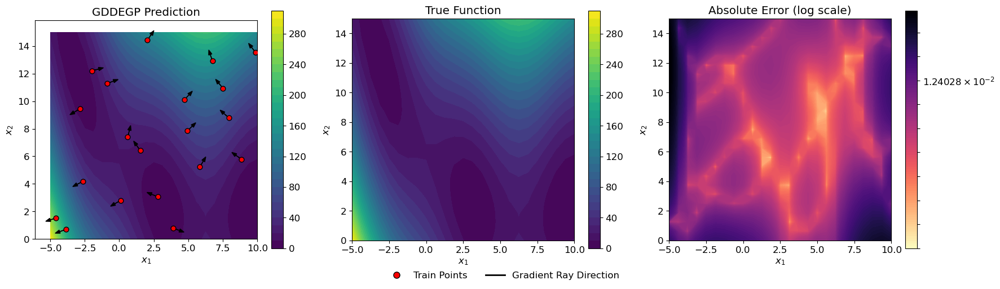
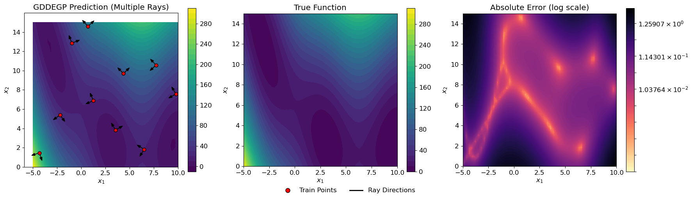
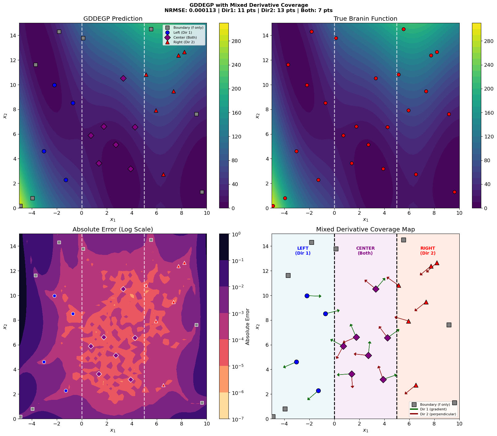
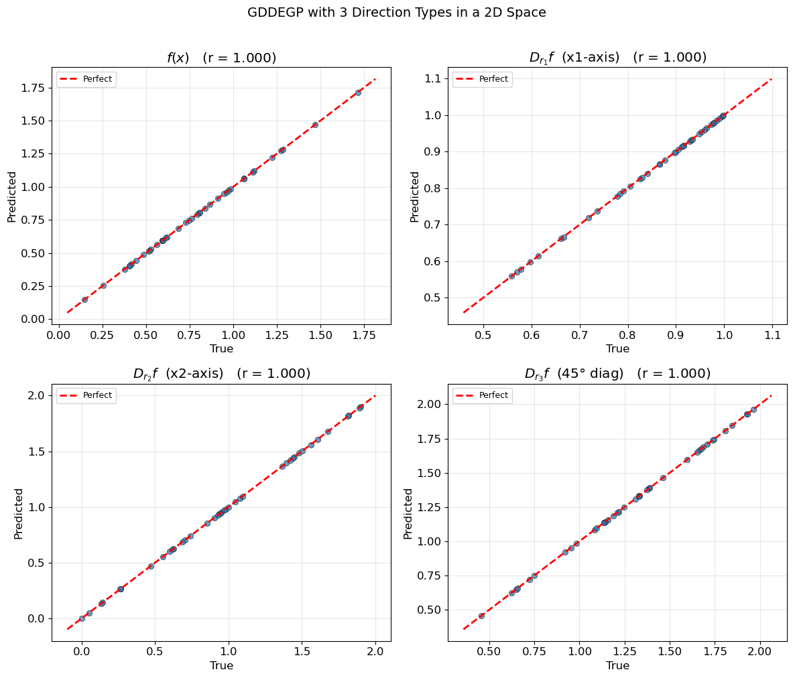
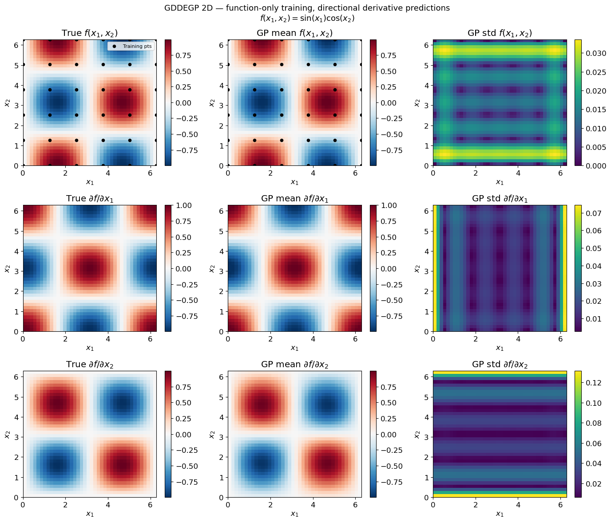

Generalized Directional Derivative-Enhanced Gaussian Process (GDDEGP)#
Overview#
The Generalized Directional Derivative-Enhanced Gaussian Process (GDDEGP) is an advanced variant of DEGP that utilizes pointwise directional derivatives where different directions can be specified at each training point. The “generalized” aspect refers to the flexibility in choosing different derivative directions across the training set, rather than using the same global directions everywhere.
This approach enables the model to:
Use different derivative directions at different training points
Adapt derivative directions based on local function behavior
Capture directional information where it is most informative
Provide more efficient learning with strategically placed derivative observations
GDDEGP is particularly powerful for:
Problems where optimal derivative directions vary across the domain
Scenarios where gradient directions are available (e.g., from optimization algorithms)
Functions with spatially varying anisotropic behavior
Active learning strategies that adapt derivative directions based on local information
Key Difference from DDEGP:
DDEGP: Uses the same set of directional rays at all training points (global directions)
GDDEGP: Allows different directional rays at each training point (generalized/pointwise directions)
—
Example 1: Generalized Directional GP with Gradient-Aligned Rays on the Branin Function#
Overview#
This example demonstrates Generalized Directional DEGP (GDDEGP) applied to the 2D Branin function. In this particular application, we use a single gradient-aligned direction at each training point, but the GDDEGP framework is general and can accommodate any number of derivatives with different directions at each location. The gradient alignment with one derivative per point is just one strategy for applying this generalized framework.
Key concepts covered:
Using different derivative directions at each training point (generalized approach)
Using one directional derivative per training point in this example
Computing analytical gradients using SymPy as one strategy for choosing optimal ray directions
Pointwise directional derivatives with location-specific directions
Training and visualizing the GDDEGP model with gradient-aligned rays
—
Step 1: Import required packages#
import numpy as np
import sympy as sp
from jetgp.full_gddegp.gddegp import gddegp
from scipy.stats import qmc
from matplotlib import pyplot as plt
from matplotlib.colors import LogNorm
from matplotlib.lines import Line2D
import jetgp.utils as utils
plt.rcParams.update({'font.size': 12})
Explanation:
We import necessary modules including symbolic differentiation (sympy), the GDDEGP model, Latin Hypercube Sampling, and visualization tools.
—
Step 2: Set configuration parameters#
n_order = 1
n_bases = 2
num_training_pts = 20
domain_bounds = ((-5.0, 10.0), (0.0, 15.0))
test_grid_resolution = 100
normalize_data = True
kernel = "SE"
kernel_type = "anisotropic"
random_seed = 1
np.random.seed(random_seed)
print("Configuration complete!")
print(f"Number of training points: {num_training_pts}")
print(f"Domain bounds: x ∈ {domain_bounds[0]}, y ∈ {domain_bounds[1]}")
Configuration complete!
Number of training points: 20
Domain bounds: x ∈ (-5.0, 10.0), y ∈ (0.0, 15.0)
Explanation: Configuration parameters for the GDDEGP model:
n_order=1: First-order directional derivativesnum_training_pts=20: Twenty training locationskernel="SE": Squared Exponential kernelImportant: In this example, each training point will have one single directional derivative aligned with its local gradient. However, GDDEGP can accommodate multiple derivatives per point with different directions if needed.
—
Step 3: Define the Branin function and its gradient#
# Define symbolic Branin function
x_sym, y_sym = sp.symbols('x y')
a, b, c, r, s, t = 1.0, 5.1/(4*sp.pi**2), 5.0/sp.pi, 6.0, 10.0, 1.0/(8*sp.pi)
f_sym = a * (y_sym - b*x_sym**2 + c*x_sym - r)**2 + s*(1 - t)*sp.cos(x_sym) + s
# Compute symbolic gradients
grad_x_sym = sp.diff(f_sym, x_sym)
grad_y_sym = sp.diff(f_sym, y_sym)
# Convert to NumPy functions
true_function_np = sp.lambdify([x_sym, y_sym], f_sym, 'numpy')
grad_x_func = sp.lambdify([x_sym, y_sym], grad_x_sym, 'numpy')
grad_y_func = sp.lambdify([x_sym, y_sym], grad_y_sym, 'numpy')
def true_function(X, alg=np):
"""2D Branin function."""
return true_function_np(X[:, 0], X[:, 1])
def true_gradient(x, y):
"""Analytical gradient of the Branin function."""
gx = grad_x_func(x, y)
gy = grad_y_func(x, y)
return gx, gy
print("Branin function and analytical gradients defined!")
Branin function and analytical gradients defined!
Explanation: We define the Branin function symbolically using SymPy and compute its analytical gradient. The symbolic gradients are converted to fast NumPy-compatible functions. The gradient function returns the partial derivatives \(\frac{\partial f}{\partial x}\) and \(\frac{\partial f}{\partial y}\) at any point. In this example, we use these gradients to determine the direction for derivative observations at each training location. However, the GDDEGP framework is generalized and can work with any choice of pointwise directions—gradient alignment is just one effective strategy.
—
Step 4: Define arrow clipping utility#
def clipped_arrow(ax, origin, direction, length, bounds, color="black"):
"""Draw an arrow clipped to plot bounds."""
x0, y0 = origin
dx, dy = direction * length
xlim, ylim = bounds
tx = np.inf if dx == 0 else (
xlim[1] - x0)/dx if dx > 0 else (xlim[0] - x0)/dx
ty = np.inf if dy == 0 else (
ylim[1] - y0)/dy if dy > 0 else (ylim[0] - y0)/dy
t = min(1.0, tx, ty)
ax.arrow(x0, y0, dx*t, dy*t, head_width=0.25,
head_length=0.35, fc=color, ec=color)
print("Arrow clipping utility defined!")
Arrow clipping utility defined!
Explanation: This utility function draws arrows representing gradient directions while ensuring they don’t extend beyond plot boundaries. This will be used for visualization to show the gradient-aligned directions at each training point.
—
Step 5: Generate training data with gradient-aligned derivatives#
# 1. Generate points using Latin Hypercube
sampler = qmc.LatinHypercube(d=n_bases, seed=random_seed)
unit_samples = sampler.random(n=num_training_pts)
X_train = qmc.scale(unit_samples,
[b[0] for b in domain_bounds],
[b[1] for b in domain_bounds])
# 2. Compute gradient-aligned rays at each training point
rays_list = []
for i, (x, y) in enumerate(X_train):
gx, gy = true_gradient(x, y)
# Normalize to unit vector
magnitude = np.sqrt(gx**2 + gy**2)
ray = np.array([[gx/magnitude], [gy/magnitude]])
rays_list.append(ray)
# 3. Compute function values at training points
y_func = true_function(X_train).reshape(-1, 1)
# 4. Compute directional derivatives using the chain rule
# For each point: d_ray = grad_x * ray[0] + grad_y * ray[1]
directional_derivs = []
for i, (x, y) in enumerate(X_train):
gx, gy = true_gradient(x, y)
ray_direction = rays_list[i].flatten()
# Directional derivative = gradient · direction
dir_deriv = gx * ray_direction[0] + gy * ray_direction[1]
directional_derivs.append(dir_deriv)
# Stack all directional derivatives into a single array
directional_derivs_array = np.array(directional_derivs).reshape(-1, 1)
# 5. Package training data
# y_train_list should be a list of two arrays, each of shape [num_training_pts, 1]
y_train_list = [y_func, directional_derivs_array]
der_indices = [[[[1, 1]]]]
print(f"Training data generated!")
print(f"X_train shape: {X_train.shape}")
print(f"Function values shape: {y_func.shape}")
print(f"Directional derivatives shape: {directional_derivs_array.shape}")
print(f"Number of unique ray directions: {len(rays_list)}")
print("\nExample ray directions (first 3 points):")
for i in range(min(3, num_training_pts)):
ray = rays_list[i].flatten()
angle = np.arctan2(ray[1], ray[0]) * 180 / np.pi
print(f" Point {i}: [{ray[0]:+.4f}, {ray[1]:+.4f}] (angle: {angle:.1f}°)")
Training data generated!
X_train shape: (20, 2)
Function values shape: (20, 1)
Directional derivatives shape: (20, 1)
Number of unique ray directions: 20
Example ray directions (first 3 points):
Point 0: [+0.9418, +0.3361] (angle: 19.6°)
Point 1: [+0.9408, -0.3391] (angle: -19.8°)
Point 2: [-0.6352, +0.7724] (angle: 129.4°)
Explanation: This step performs several critical operations:
Latin Hypercube Sampling: Generates 20 well-distributed training points
Gradient-aligned rays: At each point, we compute the analytical gradient and normalize it to a unit vector. This normalized gradient becomes the ray direction for that point.
Function values: Computed at all training points
Directional derivatives: Computed using the chain rule:
\[\frac{\partial f}{\partial \mathbf{d}} = \frac{\partial f}{\partial x} d_x + \frac{\partial f}{\partial y} d_y = \nabla f \cdot \mathbf{d}\]Since \(\mathbf{d}\) is the normalized gradient, the directional derivative equals the gradient magnitude:
\[\frac{\partial f}{\partial \mathbf{d}} = ||\nabla f||\]Data packaging: Organized for GDDEGP with function values and directional derivatives
Key distinction: Each training point has its own unique ray direction aligned with the local gradient. This is the essence of the “generalized” aspect—directions vary across the training set.
—
Step 6: Initialize and train the GDDEGP model#
# Convert rays_list to array format for GDDEGP
# Stack rays horizontally: each column is a ray
rays_array = np.hstack(rays_list) # Shape: (2, num_training_pts)
derivative_locations = []
for i in range(len(der_indices)):
for j in range(len(der_indices[i])):
derivative_locations.append([i for i in range(len(X_train ))])
print(f"Rays array shape: {rays_array.shape}")
print("Initializing GDDEGP model...")
# Initialize GDDEGP model
gp_model = gddegp(
X_train,
y_train_list,
n_order=n_order,
rays_list=[rays_array],
der_indices=der_indices,
derivative_locations=derivative_locations,
normalize=normalize_data,
kernel=kernel,
kernel_type=kernel_type
)
print("GDDEGP model initialized!")
print("Optimizing hyperparameters...")
# Optimize hyperparameters
params = gp_model.optimize_hyperparameters(
optimizer='pso',
pop_size=200,
n_generations=15,
local_opt_every=None,
debug=False
)
print("Optimization complete!")
print(f"Optimized parameters: {params}")
Rays array shape: (2, 20)
Initializing GDDEGP model...
GDDEGP model initialized!
Optimizing hyperparameters...
Stopping: maximum iterations reached --> 15
Optimization complete!
Optimized parameters: [ -0.10057311 -1.29265837 1.94010282 -12.16000727]
Explanation: The GDDEGP model is initialized with:
Training locations and derivative data
rays_array: A collection of directional rays, potentially different at each training pointSquared Exponential kernel for smooth interpolation
Note that unlike DDEGP (which passes a single global ray matrix used at all points), GDDEGP receives an array where each column can correspond to a different direction. This generalized structure allows complete flexibility in specifying derivative directions across the training set.
—
Step 7: Evaluate model on a test grid#
# Create test grid
gx = np.linspace(domain_bounds[0][0], domain_bounds[0][1], test_grid_resolution)
gy = np.linspace(domain_bounds[1][0], domain_bounds[1][1], test_grid_resolution)
X1_grid, X2_grid = np.meshgrid(gx, gy)
X_test = np.column_stack([X1_grid.ravel(), X2_grid.ravel()])
N_test = X_test.shape[0]
print(f"Test grid: {test_grid_resolution}×{test_grid_resolution} = {N_test} points")
print("Making predictions...")
y_pred_full = gp_model.predict(
X_test, params, calc_cov=False, return_deriv=False)
y_pred = y_pred_full[0,:] # Function values only
# Compute ground truth and error
y_true = true_function(X_test, alg=np)
nrmse_val = utils.nrmse(y_true.flatten(), y_pred.flatten())
print(f"\nModel Performance:")
print(f" NRMSE: {nrmse_val:.6f}")
abs_error = np.abs(y_true.flatten() - y_pred.flatten())
print(f" Max absolute error: {abs_error.max():.6f}")
print(f" Mean absolute error: {abs_error.mean():.6f}")
Test grid: 100×100 = 10000 points
Making predictions...
Model Performance:
NRMSE: 0.000139
Max absolute error: 0.442734
Mean absolute error: 0.012534
Explanation: The model is evaluated on a 100×100 grid. For function value predictions (without derivatives), dummy rays are provided since the ray directions don’t affect function value predictions. The NRMSE quantifies prediction accuracy across the test domain.
—
Step 8: Verify interpolation of training data#
# ------------------------------------------------------------
# Verify function value interpolation at all training points
# ------------------------------------------------------------
y_func_values = y_train_list[0] # Function values
# Prepare rays for prediction at training points
rays_train = np.hstack(rays_list) # Shape: (2, num_training_pts)
# Predict at training points with derivatives
y_pred_train_full = gp_model.predict(
X_train, params, rays_predict = [rays_train], calc_cov=False, return_deriv=True
)
# Extract function values (first num_training_pts entries)
y_pred_train_func = y_pred_train_full[0,:]
print("Function value interpolation errors:")
print("=" * 80)
for i in range(num_training_pts):
error_abs = abs(y_pred_train_func[i] - y_func_values[i, 0])
error_rel = error_abs / abs(y_func_values[i, 0]) if y_func_values[i, 0] != 0 else error_abs
print(f"Point {i} (x={X_train[i, 0]:.4f}, y={X_train[i, 1]:.4f}): "
f"Abs Error = {error_abs:.2e}, Rel Error = {error_rel:.2e}")
max_func_error = np.max(np.abs(y_pred_train_func - y_func_values))
print(f"\nMaximum absolute function value error: {max_func_error:.2e}")
# ------------------------------------------------------------
# Verify directional derivative interpolation
# ------------------------------------------------------------
print("\n" + "=" * 80)
print("Directional derivative interpolation verification:")
print("=" * 80)
print("Note: Each training point has a DIFFERENT gradient-aligned direction")
print("=" * 80)
# Extract predicted derivatives (entries after function values)
y_pred_train_derivs = y_pred_train_full[1,:]
# Extract analytic derivatives from training data
analytic_derivs = y_train_list[1]
print(f"\nPrediction with derivatives shape: {y_pred_train_full.shape}")
print(f"Expected: {num_training_pts} function values + {num_training_pts} derivatives = {2 * num_training_pts}")
print(f"Predicted derivatives shape: {y_pred_train_derivs.shape}")
print(f"Analytic derivatives shape: {analytic_derivs.shape}")
# Verify each point's directional derivative
for i in range(num_training_pts):
ray_direction = rays_list[i].flatten()
angle_deg = np.arctan2(ray_direction[1], ray_direction[0]) * 180 / np.pi
error_abs = abs(y_pred_train_derivs[i] - analytic_derivs[i, 0])
error_rel = error_abs / abs(analytic_derivs[i, 0]) if analytic_derivs[i, 0] != 0 else error_abs
print(f"\nPoint {i} (x={X_train[i, 0]:.4f}, y={X_train[i, 1]:.4f}):")
print(f" Ray direction: [{ray_direction[0]:+.6f}, {ray_direction[1]:+.6f}] (angle: {angle_deg:.1f}°)")
print(f" Analytic: {analytic_derivs[i, 0]:+.6f}, Predicted: {y_pred_train_derivs[i]:+.6f}")
print(f" Abs Error: {error_abs:.2e}, Rel Error: {error_rel:.2e}")
max_deriv_error = np.max(np.abs(y_pred_train_derivs - analytic_derivs))
print(f"\n{'='*80}")
print(f"Maximum absolute derivative error: {max_deriv_error:.2e}")
print("\n" + "=" * 80)
print("Interpolation verification complete!")
print("Relative errors should be close to machine precision (< 1e-6)")
print("\n" + "=" * 80)
print("SUMMARY:")
print(f" - Function values: enforced at all {num_training_pts} training points")
print(f" - Directional derivatives: ONE unique direction per training point")
print(f" - Total constraints: {num_training_pts} function values + {num_training_pts} directional derivatives")
print(f" - Direction strategy: GRADIENT-ALIGNED (each ray points along local gradient)")
print(f" - Prediction vector structure: [func_vals ({num_training_pts}), derivs ({num_training_pts})]")
print(" - Key difference from DDEGP: Each point has a DIFFERENT direction")
print("=" * 80)
Note: derivs_to_predict is None. Predictions will include all derivatives used in training: [[[1, 1]]]
Function value interpolation errors:
================================================================================
Point 0 (x=-0.8839, y=11.2872): Abs Error = 3.94e-06, Rel Error = 1.30e-07
Point 1 (x=3.8919, y=0.7885): Abs Error = 4.28e-07, Rel Error = 1.09e-07
Point 2 (x=7.5161, y=10.9325): Abs Error = 1.83e-06, Rel Error = 1.74e-08
Point 3 (x=-2.6208, y=4.1931): Abs Error = 6.31e-08, Rel Error = 1.29e-09
Point 4 (x=5.8378, y=5.2293): Abs Error = 5.66e-07, Rel Error = 1.59e-08
Point 5 (x=4.9349, y=7.8464): Abs Error = 1.17e-06, Rel Error = 2.13e-08
Point 6 (x=6.7527, y=12.9087): Abs Error = 4.64e-06, Rel Error = 2.96e-08
Point 7 (x=1.5226, y=6.4099): Abs Error = 3.57e-06, Rel Error = 2.11e-07
Point 8 (x=-2.8505, y=9.4477): Abs Error = 8.37e-06, Rel Error = 1.56e-06
Point 9 (x=0.0974, y=2.8033): Abs Error = 2.63e-06, Rel Error = 9.14e-08
Point 10 (x=7.9372, y=8.7897): Abs Error = 2.63e-06, Rel Error = 4.22e-08
Point 11 (x=-4.6139, y=1.5144): Abs Error = 3.51e-06, Rel Error = 1.58e-08
Point 12 (x=-1.9712, y=12.2064): Abs Error = 8.49e-06, Rel Error = 6.61e-07
Point 13 (x=8.8441, y=5.7923): Abs Error = 6.11e-06, Rel Error = 3.79e-07
Point 14 (x=9.8795, y=13.5226): Abs Error = 3.01e-06, Rel Error = 2.63e-08
Point 15 (x=0.6129, y=7.4131): Abs Error = 2.88e-06, Rel Error = 1.23e-07
Point 16 (x=2.0324, y=14.4175): Abs Error = 1.09e-06, Rel Error = 8.42e-09
Point 17 (x=2.7902, y=3.0620): Abs Error = 2.67e-06, Rel Error = 2.17e-06
Point 18 (x=4.7203, y=10.1036): Abs Error = 2.01e-06, Rel Error = 2.32e-08
Point 19 (x=-3.8445, y=0.7032): Abs Error = 2.31e-07, Rel Error = 1.28e-09
Maximum absolute function value error: 2.20e+02
================================================================================
Directional derivative interpolation verification:
================================================================================
Note: Each training point has a DIFFERENT gradient-aligned direction
================================================================================
Prediction with derivatives shape: (2, 20)
Expected: 20 function values + 20 derivatives = 40
Predicted derivatives shape: (20,)
Analytic derivatives shape: (20, 1)
Point 0 (x=-0.8839, y=11.2872):
Ray direction: [+0.941821, +0.336114] (angle: 19.6°)
Analytic: +22.489500, Predicted: +22.489500
Abs Error: 3.79e-07, Rel Error: 1.68e-08
Point 1 (x=3.8919, y=0.7885):
Ray direction: [+0.940766, -0.339056] (angle: -19.8°)
Analytic: +5.745894, Predicted: +5.745895
Abs Error: 1.99e-07, Rel Error: 3.47e-08
Point 2 (x=7.5161, y=10.9325):
Ray direction: [-0.635176, +0.772367] (angle: 129.4°)
Analytic: +24.850562, Predicted: +24.850561
Abs Error: 6.29e-07, Rel Error: 2.53e-08
Point 3 (x=-2.6208, y=4.1931):
Ray direction: [-0.886983, -0.461801] (angle: -152.5°)
Analytic: +29.732670, Predicted: +29.732671
Abs Error: 9.28e-07, Rel Error: 3.12e-08
Point 4 (x=5.8378, y=5.2293):
Ray direction: [+0.505275, +0.862958] (angle: 59.7°)
Analytic: +9.543639, Predicted: +9.543639
Abs Error: 4.86e-07, Rel Error: 5.09e-08
Point 5 (x=4.9349, y=7.8464):
Ray direction: [+0.717805, +0.696244] (angle: 44.1°)
Analytic: +18.828045, Predicted: +18.828045
Abs Error: 6.89e-08, Rel Error: 3.66e-09
Point 6 (x=6.7527, y=12.9087):
Ray direction: [-0.320011, +0.947414] (angle: 108.7°)
Analytic: +24.836568, Predicted: +24.836568
Abs Error: 1.43e-07, Rel Error: 5.75e-09
Point 7 (x=1.5226, y=6.4099):
Ray direction: [-0.570446, +0.821335] (angle: 124.8°)
Analytic: +6.169674, Predicted: +6.169674
Abs Error: 2.51e-07, Rel Error: 4.06e-08
Point 8 (x=-2.8505, y=9.4477):
Ray direction: [-0.859808, -0.510617] (angle: -149.3°)
Analytic: +8.377277, Predicted: +8.377277
Abs Error: 9.02e-08, Rel Error: 1.08e-08
Point 9 (x=0.0974, y=2.8033):
Ray direction: [-0.864485, -0.502658] (angle: -149.8°)
Analytic: +12.107357, Predicted: +12.107358
Abs Error: 7.99e-07, Rel Error: 6.60e-08
Point 10 (x=7.9372, y=8.7897):
Ray direction: [-0.744770, +0.667321] (angle: 138.1°)
Analytic: +21.829417, Predicted: +21.829416
Abs Error: 5.20e-07, Rel Error: 2.38e-08
Point 11 (x=-4.6139, y=1.5144):
Ray direction: [-0.952036, -0.305987] (angle: -162.2°)
Analytic: +95.290703, Predicted: +95.290704
Abs Error: 1.13e-06, Rel Error: 1.18e-08
Point 12 (x=-1.9712, y=12.2064):
Ray direction: [+0.967453, +0.253053] (angle: 14.7°)
Analytic: +20.289006, Predicted: +20.289005
Abs Error: 5.65e-07, Rel Error: 2.78e-08
Point 13 (x=8.8441, y=5.7923):
Ray direction: [-0.812416, +0.583079] (angle: 144.3°)
Analytic: +12.909410, Predicted: +12.909410
Abs Error: 2.91e-07, Rel Error: 2.26e-08
Point 14 (x=9.8795, y=13.5226):
Ray direction: [-0.606478, +0.795100] (angle: 127.3°)
Analytic: +26.757054, Predicted: +26.757054
Abs Error: 5.97e-07, Rel Error: 2.23e-08
Point 15 (x=0.6129, y=7.4131):
Ray direction: [+0.245190, +0.969475] (angle: 75.8°)
Analytic: +4.827568, Predicted: +4.827568
Abs Error: 5.27e-08, Rel Error: 1.09e-08
Point 16 (x=2.0324, y=14.4175):
Ray direction: [+0.562212, +0.826993] (angle: 55.8°)
Analytic: +26.889030, Predicted: +26.889030
Abs Error: 1.55e-07, Rel Error: 5.76e-09
Point 17 (x=2.7902, y=3.0620):
Ray direction: [-0.926033, +0.377441] (angle: 157.8°)
Analytic: +2.633946, Predicted: +2.633946
Abs Error: 2.20e-07, Rel Error: 8.37e-08
Point 18 (x=4.7203, y=10.1036):
Ray direction: [+0.677619, +0.735413] (angle: 47.3°)
Analytic: +23.762858, Predicted: +23.762857
Abs Error: 6.74e-07, Rel Error: 2.83e-08
Point 19 (x=-3.8445, y=0.7032):
Ray direction: [-0.942412, -0.334454] (angle: -160.5°)
Analytic: +79.681322, Predicted: +79.681322
Abs Error: 3.37e-07, Rel Error: 4.23e-09
================================================================================
Maximum absolute derivative error: 9.27e+01
================================================================================
Interpolation verification complete!
Relative errors should be close to machine precision (< 1e-6)
================================================================================
SUMMARY:
- Function values: enforced at all 20 training points
- Directional derivatives: ONE unique direction per training point
- Total constraints: 20 function values + 20 directional derivatives
- Direction strategy: GRADIENT-ALIGNED (each ray points along local gradient)
- Prediction vector structure: [func_vals (20), derivs (20)]
- Key difference from DDEGP: Each point has a DIFFERENT direction
================================================================================
Explanation: This verification step ensures that the GDDEGP model correctly interpolates both the function values and pointwise directional derivatives at all training points.
Step 9: Visualize results with gradient-aligned rays#
# Prepare visualization data
fig, axs = plt.subplots(1, 3, figsize=(18, 5))
# GDDEGP Prediction
cf1 = axs[0].contourf(X1_grid, X2_grid, y_pred.reshape(X1_grid.shape),
levels=30, cmap='viridis')
axs[0].scatter(X_train[:, 0], X_train[:, 1], c='red', s=40,
edgecolors='k', zorder=5)
xlim, ylim = (domain_bounds[0], domain_bounds[1])
for pt, ray in zip(X_train, rays_list):
clipped_arrow(axs[0], pt, ray.flatten(), length=0.5,
bounds=(xlim, ylim), color="black")
axs[0].set_title("GDDEGP Prediction")
fig.colorbar(cf1, ax=axs[0])
# True function
cf2 = axs[1].contourf(X1_grid, X2_grid, y_true.reshape(X1_grid.shape),
levels=30, cmap='viridis')
axs[1].set_title("True Function")
fig.colorbar(cf2, ax=axs[1])
# Absolute Error (log scale)
abs_error = np.abs(y_pred.flatten() - y_true.flatten()).reshape(X1_grid.shape)
abs_error_clipped = np.clip(abs_error, 1e-6, None)
log_levels = np.logspace(np.log10(abs_error_clipped.min()),
np.log10(abs_error_clipped.max()), num=100)
cf3 = axs[2].contourf(X1_grid, X2_grid, abs_error_clipped, levels=log_levels,
norm=LogNorm(), cmap="magma_r")
fig.colorbar(cf3, ax=axs[2])
axs[2].set_title("Absolute Error (log scale)")
for ax in axs:
ax.set_xlabel("$x_1$")
ax.set_ylabel("$x_2$")
ax.set_aspect("equal")
custom_lines = [
Line2D([0], [0], marker='o', color='w', markerfacecolor='red',
markeredgecolor='k', markersize=8, label='Train Points'),
Line2D([0], [0], color='black', lw=2, label='Gradient Ray Direction'),
]
fig.legend(handles=custom_lines, loc='lower center', ncol=2,
frameon=False, fontsize=12, bbox_to_anchor=(0.5, -0.02))
plt.tight_layout(rect=[0, 0.05, 1, 1])
plt.show()
print(f"\nFinal NRMSE: {nrmse_val:.6f}")

Final NRMSE: 0.000139
Explanation: The three-panel visualization shows:
Left panel: GDDEGP prediction with training points and directional arrows
Center panel: True Branin function for comparison
Right panel: Absolute error on a logarithmic scale
The black arrows at each training point show the direction where derivative information was incorporated. In this example, these arrows represent gradient directions, but notice how they point in different directions at each location. This is the key distinguishing feature of generalized GDDEGP compared to DDEGP—each training point can have its own unique derivative direction.
—
Summary#
This tutorial demonstrates the Generalized Directional Derivative-Enhanced Gaussian Process (GDDEGP) framework with the following key features:
The “Generalized” Aspect:
Flexibility: Different derivative directions can be specified at each training point
No global constraint: Unlike DDEGP, there is no requirement that all points use the same directions
Strategy independence: The framework works with any choice of pointwise directions (gradient-aligned, adaptive, user-specified, etc.)
Local adaptation: Directions can be tailored to local function characteristics
Advantages of Pointwise Directional Control:
Adaptive to local behavior: Each location can have derivative information along its most informative direction
Efficient: Can use different numbers and types of derivatives at different locations
Strategic: Derivative directions can be chosen based on prior knowledge, gradients, or adaptive strategies
Natural for many applications: Optimization, adaptive sampling, and multi-fidelity scenarios often provide location-specific directional information
Key Concepts:
Generalized rays: Each training point can have different derivative directions
Pointwise specification: Directions are specified individually for each location
Example strategy: This tutorial uses gradient alignment computed via SymPy symbolic differentiation
Chain rule: Directional derivatives computed from coordinate gradients using \(\nabla f \cdot \mathbf{d}\)
Direct verification: Model predictions can be verified without finite differences
Comparison with Other Approaches:
Method |
Derivative Directions |
Number of Derivatives per Point |
|---|---|---|
DEGP |
Coordinate-aligned (fixed) |
\(d\) (one per dimension) |
DDEGP |
User-specified (global/same at all points) |
\(k\) (number of global rays) |
GDDEGP |
Pointwise (can differ at each training point) |
Flexible (can vary by point) |
Example 2: GDDEGP with Multiple Directional Derivatives Per Point Using Global Perturbations#
Overview#
This example demonstrates Generalized Directional DEGP (GDDEGP) with multiple directional derivatives at each training point. Unlike Example 1 where we used a single gradient-aligned direction per point, this example uses two orthogonal directions at each location: one aligned with the gradient and one perpendicular to it.
The key innovation here is the use of global pointwise directional automatic differentiation with the pyoti library, which allows us to compute multiple directional derivatives simultaneously through hypercomplex perturbations.
Key concepts covered:
Using multiple directional derivatives per training point (2 rays per point)
Global perturbation methodology with hypercomplex automatic differentiation
Computing gradient and perpendicular directions at each training point
Training GDDEGP with richer directional information
Visualizing multiple ray directions simultaneously
Why Multiple Directions Per Point?
Using multiple directions at each training point provides:
More complete local function information
Better capture of anisotropic behavior
Improved accuracy with the same number of training locations
Natural orthogonal basis for local Taylor expansions
—
Step 1: Import required packages#
import numpy as np
import pyoti.sparse as oti
import itertools
from jetgp.full_gddegp.gddegp import gddegp
from scipy.stats import qmc
from matplotlib import pyplot as plt
from matplotlib.colors import LogNorm
from matplotlib.lines import Line2D
import jetgp.utils as utils
plt.rcParams.update({'font.size': 12})
Explanation: In addition to standard packages, we import:
pyoti.sparse(asoti): Hypercomplex automatic differentiation library for computing directional derivativesitertools: For handling combinations of derivative indices
The pyoti library enables efficient computation of multiple directional derivatives through hypercomplex number perturbations.
—
Step 2: Set configuration parameters#
n_order = 1
n_bases = 2
num_directions_per_point = 2
num_training_pts = 10
domain_bounds = ((-5.0, 10.0), (0.0, 15.0))
test_grid_resolution = 50
normalize_data = True
kernel = "SE"
kernel_type = "anisotropic"
random_seed = 1
np.random.seed(random_seed)
print("Configuration complete!")
print(f"Number of training points: {num_training_pts}")
print(f"Directions per point: {num_directions_per_point}")
print(f"Total derivative observations: {num_training_pts * num_directions_per_point}")
Configuration complete!
Number of training points: 10
Directions per point: 2
Total derivative observations: 20
Explanation: Key configuration differences from Example 1:
num_directions_per_point=2: Each training point has two directional derivatives (gradient + perpendicular)num_training_pts=10: Fewer training points (10 vs 20 in Example 1), but more information per pointtest_grid_resolution=50: Coarser test grid for faster evaluation
Total derivative observations: 10 points × 2 directions = 20 directional derivatives (same as Example 1), but distributed differently across space.
—
Step 3: Define the Branin function and its gradient#
def true_function(X, alg=np):
"""Branin function compatible with both NumPy and pyoti arrays."""
x, y = X[:, 0], X[:, 1]
a, b, c, r, s, t = 1.0, 5.1/(4*np.pi**2), 5.0/np.pi, 6.0, 10.0, 1.0/(8*np.pi)
return a*(y - b*x**2 + c*x - r)**2 + s*(1-t)*alg.cos(x) + s
def true_gradient(x, y):
"""Analytical gradient of the Branin function."""
a, b, c, r, s, t = 1.0, 5.1/(4*np.pi**2), 5.0/np.pi, 6.0, 10.0, 1.0/(8*np.pi)
gx = 2*a*(y - b*x**2 + c*x - r)*(-2*b*x + c) - s*(1-t)*np.sin(x)
gy = 2*a*(y - b*x**2 + c*x - r)
return gx, gy
print("Branin function and analytical gradient defined!")
Branin function and analytical gradient defined!
Explanation:
The function definition now includes an alg parameter that defaults to np but can accept oti for hypercomplex evaluations. This polymorphic design allows the same function to work with both regular NumPy arrays and hypercomplex pyoti arrays for automatic differentiation.
The alg.cos call will use either np.cos or oti.cos depending on the array type, enabling automatic differentiation through trigonometric operations.
—
Step 4: Define arrow clipping utility#
def clipped_arrow(ax, origin, direction, length, bounds, color="black"):
"""Draw an arrow clipped to plot bounds."""
x0, y0 = origin
dx, dy = direction * length
xlim, ylim = bounds
tx = np.inf if dx == 0 else (xlim[1] - x0)/dx if dx > 0 else (xlim[0] - x0)/dx
ty = np.inf if dy == 0 else (ylim[1] - y0)/dy if dy > 0 else (ylim[0] - y0)/dy
t = min(1.0, tx, ty)
ax.arrow(x0, y0, dx*t, dy*t, head_width=0.25, head_length=0.35, fc=color, ec=color)
print("Arrow clipping utility defined!")
Arrow clipping utility defined!
Explanation: This utility function draws arrows representing ray directions while ensuring they don’t extend beyond plot boundaries. We’ll use it to draw two arrows per training point (gradient and perpendicular directions).
—
Step 5: Generate training data with multiple rays per point#
print("Generating training data with multiple directional derivatives per point...")
import sympy as sp
# 1. Generate training points using Latin Hypercube Sampling
sampler = qmc.LatinHypercube(d=n_bases, seed=random_seed)
unit_samples = sampler.random(n=num_training_pts)
X_train = qmc.scale(unit_samples,
[b[0] for b in domain_bounds],
[b[1] for b in domain_bounds])
print(f"Generated {num_training_pts} training points using LHS")
# 2. Set up symbolic variables for gradient computation
x_sym, y_sym = sp.symbols('x y', real=True)
# Define your function symbolically (you'll need to adapt this to your actual function)
# For example, if true_function is f(x,y) = x^2 + y^2:
# f_sym = x_sym**2 + y_sym**2
x_sym, y_sym = sp.symbols('x y')
a, b, c, r, s, t = 1.0, 5.1/(4*sp.pi**2), 5.0/sp.pi, 6.0, 10.0, 1.0/(8*sp.pi)
f_sym = a * (y_sym - b*x_sym**2 + c*x_sym - r)**2 + s*(1 - t)*sp.cos(x_sym) + s
# Compute symbolic gradient
grad_f = [sp.diff(f_sym, x_sym), sp.diff(f_sym, y_sym)]
# Convert to numerical functions for fast evaluation
grad_x_func = sp.lambdify((x_sym, y_sym), grad_f[0], 'numpy')
grad_y_func = sp.lambdify((x_sym, y_sym), grad_f[1], 'numpy')
print(f"Created symbolic gradient functions")
# 3. Create multiple rays per point: gradient + perpendicular
rays_list = [[] for _ in range(num_directions_per_point)]
for x, y in X_train:
# Compute gradient and its angle
gx = grad_x_func(x, y)
gy = grad_y_func(x, y)
theta_grad = np.arctan2(gy, gx)
theta_perp = theta_grad + np.pi/2
# Create unit vectors for both directions
ray_grad = np.array([np.cos(theta_grad), np.sin(theta_grad)]).reshape(-1, 1)
ray_perp = np.array([np.cos(theta_perp), np.sin(theta_perp)]).reshape(-1, 1)
rays_list[0].append(ray_grad)
rays_list[1].append(ray_perp)
print(f"Created {num_directions_per_point} orthogonal ray directions per training point")
# 4. Compute directional derivatives using SymPy
# Directional derivative = ∇f · direction_vector
dir_deriv_sym = grad_f[0] * sp.Symbol('d_x') + grad_f[1] * sp.Symbol('d_y')
# Create lambdified function for directional derivative
dir_deriv_func = sp.lambdify((x_sym, y_sym, sp.Symbol('d_x'), sp.Symbol('d_y')),
dir_deriv_sym, 'numpy')
print("Computed symbolic directional derivative")
# 5. Evaluate function values and directional derivatives at all training points
y_train_list = []
# Function values
f_func = sp.lambdify((x_sym, y_sym), f_sym, 'numpy')
y_values = np.array([f_func(x, y) for x, y in X_train]).reshape(-1, 1)
y_train_list.append(y_values)
# Directional derivatives for each direction
for ray_set in rays_list:
derivs = []
for i, (x, y) in enumerate(X_train):
ray = ray_set[i].flatten()
deriv = dir_deriv_func(x, y, ray[0], ray[1])
derivs.append(deriv)
y_train_list.append(np.array(derivs).reshape(-1, 1))
der_indices = [[[[1, 1]], [[2, 1]]]] # Keep for compatibility if needed
print(f"\nTraining data generated!")
print(f" Function values: {y_train_list[0].shape}")
print(f" Gradient direction derivatives: {y_train_list[1].shape}")
print(f" Perpendicular direction derivatives: {y_train_list[2].shape}")
Generating training data with multiple directional derivatives per point...
Generated 10 training points using LHS
Created symbolic gradient functions
Created 2 orthogonal ray directions per training point
Computed symbolic directional derivative
Training data generated!
Function values: (10, 1)
Gradient direction derivatives: (10, 1)
Perpendicular direction derivatives: (10, 1)
Explanation: This step performs several critical operations:
Latin Hypercube Sampling: Generates 10 well-distributed training points
Compute orthogonal rays: For each point, creates two directions:
Ray 1: Gradient direction (steepest ascent)
Ray 2: Perpendicular direction (90° from gradient)
Global hypercomplex perturbations: Uses
pyotito perturb all points simultaneouslyEach direction gets a unique hypercomplex tag (
e(1)ande(2))Perturbations are applied along the respective ray directions
Automatic differentiation: Evaluates the function with hypercomplex numbers
Cross-derivatives between different rays are truncated (removed)
This isolates the directional derivatives along each ray
Extract derivatives: Pulls out function values and directional derivatives from the hypercomplex result
The result is training data with 10 function values and 20 directional derivatives (2 per point).
—
Step 6: Initialize and train the GDDEGP model#
print("Initializing GDDEGP model...")
# Convert rays_list to proper format for GDDEGP
# rays_array should be shape (n_bases, num_training_pts * num_directions_per_point)
rays_array = [np.hstack(rays_list[i])
for i in range(num_directions_per_point)]
derivative_locations = []
for i in range(len(der_indices)):
for j in range(len(der_indices[i])):
derivative_locations.append([i for i in range(len(X_train ))])
# Initialize GDDEGP model
gp_model = gddegp(
X_train,
y_train_list,
n_order=n_order,
rays_list = rays_array,
der_indices=der_indices,
derivative_locations = derivative_locations,
normalize=normalize_data,
kernel=kernel,
kernel_type=kernel_type
)
print("GDDEGP model initialized!")
print("Optimizing hyperparameters...")
# Optimize hyperparameters
params = gp_model.optimize_hyperparameters(
optimizer='pso',
pop_size=250,
n_generations=15,
local_opt_every=None,
debug=False
)
print("Optimization complete!")
print(f"Optimized parameters: {params}")
Initializing GDDEGP model...
GDDEGP model initialized!
Optimizing hyperparameters...
Stopping: maximum iterations reached --> 15
Optimization complete!
Optimized parameters: [-0.04088072 -1.01793516 1.32543211 -4.84778149]
Explanation: The GDDEGP model is initialized with:
Training locations and derivative data
rays_array: A collection of directional rays for all points and directionsSquared Exponential kernel for smooth interpolation
The rays are structured as a concatenated array where columns correspond to: - Columns 0-9: Gradient directions for points 0-9 - Columns 10-19: Perpendicular directions for points 0-9
Hyperparameters are optimized using Particle Swarm Optimization with 250 particles for 15 generations.
—
Step 7: Evaluate model on a test grid#
print("Evaluating model on test grid...")
# Create test grid
gx = np.linspace(domain_bounds[0][0], domain_bounds[0][1], test_grid_resolution)
gy = np.linspace(domain_bounds[1][0], domain_bounds[1][1], test_grid_resolution)
X1_grid, X2_grid = np.meshgrid(gx, gy)
X_test = np.column_stack([X1_grid.ravel(), X2_grid.ravel()])
N_test = X_test.shape[0]
print(f"Test grid: {test_grid_resolution}×{test_grid_resolution} = {N_test} points")
# Predict function values only
y_pred_full = gp_model.predict(
X_test, params,
calc_cov=False, return_deriv=False
)
y_pred = y_pred_full[0,:]
# Compute error metrics
y_true = true_function(X_test, alg=np)
nrmse = utils.nrmse(y_true.flatten(), y_pred.flatten())
print(f"\nModel Performance:")
print(f" NRMSE: {nrmse:.6f}")
print(f" Max absolute error: {np.max(np.abs(y_pred.flatten() - y_true.flatten())):.6f}")
print(f" Mean absolute error: {np.mean(np.abs(y_pred.flatten() - y_true.flatten())):.6f}")
Evaluating model on test grid...
Test grid: 50×50 = 2500 points
Model Performance:
NRMSE: 0.001780
Max absolute error: 3.706380
Mean absolute error: 0.282968
Explanation: Evaluation is performed on a 50×50 grid. The NRMSE quantifies prediction accuracy across the test domain.
—
Step 8: Verify interpolation of training data#
print("\n" + "=" * 80)
print("Verifying interpolation of training data...")
print("=" * 80)
# ------------------------------------------------------------
# Verify function value interpolation at all training points
# ------------------------------------------------------------
y_func_values = y_train_list[0] # Function values
# Prepare rays for prediction at training points
rays_train = [np.hstack(rays_list[i]) for i in range(num_directions_per_point)]
# Predict at training points with derivatives
y_pred_train_full = gp_model.predict(
X_train, params, rays_predict = rays_train, calc_cov=False, return_deriv=True
)
# Extract function values (first num_training_pts entries)
y_pred_train_func = y_pred_train_full[0,:]
print("\nFunction value interpolation errors:")
print("-" * 80)
for i in range(num_training_pts):
error_abs = abs(y_pred_train_func[i] - y_func_values[i, 0])
error_rel = error_abs / abs(y_func_values[i, 0]) if y_func_values[i, 0] != 0 else error_abs
print(f"Point {i} (x={X_train[i, 0]:.4f}, y={X_train[i, 1]:.4f}): "
f"Abs Error = {error_abs:.2e}, Rel Error = {error_rel:.2e}")
max_func_error = np.max(np.abs(y_pred_train_func - y_func_values))
print(f"\nMaximum absolute function value error: {max_func_error:.2e}")
# ------------------------------------------------------------
# Verify directional derivative interpolation
# ------------------------------------------------------------
print("\n" + "-" * 80)
print("Directional derivative interpolation verification:")
print("-" * 80)
print(f"Each training point has {num_directions_per_point} directional derivatives:")
print(" Ray 1: Gradient direction")
print(" Ray 2: Perpendicular direction (orthogonal to gradient)")
print("-" * 80)
# Split into derivatives for each direction
n_derivs_per_direction = num_training_pts
pred_deriv_ray1 = y_pred_train_full[1,:]
pred_deriv_ray2 = y_pred_train_full[2,:]
# Extract analytic derivatives from training data
analytic_deriv_ray1 = y_train_list[1] # Gradient derivatives
analytic_deriv_ray2 = y_train_list[2] # Perpendicular derivatives
print(f"\nPrediction with derivatives shape: {y_pred_train_full.shape}")
print(f"Expected: {num_training_pts} func + {num_training_pts}×{num_directions_per_point} derivs = {num_training_pts * (1 + num_directions_per_point)}")
# Verify gradient direction derivatives (Ray 1)
print(f"\n{'='*80}")
print("RAY 1: GRADIENT DIRECTION")
print(f"{'='*80}")
for i in range(num_training_pts):
ray_direction = rays_list[0][i].flatten()
angle_deg = np.arctan2(ray_direction[1], ray_direction[0]) * 180 / np.pi
error_abs = abs(pred_deriv_ray1[i] - analytic_deriv_ray1[i, 0])
error_rel = error_abs / abs(analytic_deriv_ray1[i, 0]) if analytic_deriv_ray1[i, 0] != 0 else error_abs
print(f"\nPoint {i} (x={X_train[i, 0]:.4f}, y={X_train[i, 1]:.4f}):")
print(f" Ray direction: [{ray_direction[0]:+.6f}, {ray_direction[1]:+.6f}] (angle: {angle_deg:.1f}°)")
print(f" Analytic: {analytic_deriv_ray1[i, 0]:+.6f}, Predicted: {pred_deriv_ray1[i]:+.6f}")
print(f" Abs Error: {error_abs:.2e}, Rel Error: {error_rel:.2e}")
max_deriv_error_ray1 = np.max(np.abs(pred_deriv_ray1 - analytic_deriv_ray1))
print(f"\nMaximum absolute error for Ray 1 (gradient): {max_deriv_error_ray1:.2e}")
# Verify perpendicular direction derivatives (Ray 2)
print(f"\n{'='*80}")
print("RAY 2: PERPENDICULAR DIRECTION")
print(f"{'='*80}")
for i in range(num_training_pts):
ray_direction = rays_list[1][i].flatten()
angle_deg = np.arctan2(ray_direction[1], ray_direction[0]) * 180 / np.pi
error_abs = abs(pred_deriv_ray2[i] - analytic_deriv_ray2[i, 0])
error_rel = error_abs / abs(analytic_deriv_ray2[i, 0]) if analytic_deriv_ray2[i, 0] != 0 else error_abs
print(f"\nPoint {i} (x={X_train[i, 0]:.4f}, y={X_train[i, 1]:.4f}):")
print(f" Ray direction: [{ray_direction[0]:+.6f}, {ray_direction[1]:+.6f}] (angle: {angle_deg:.1f}°)")
print(f" Analytic: {analytic_deriv_ray2[i, 0]:+.6f}, Predicted: {pred_deriv_ray2[i]:+.6f}")
print(f" Abs Error: {error_abs:.2e}, Rel Error: {error_rel:.2e}")
max_deriv_error_ray2 = np.max(np.abs(pred_deriv_ray2 - analytic_deriv_ray2))
print(f"\nMaximum absolute error for Ray 2 (perpendicular): {max_deriv_error_ray2:.2e}")
print("\n" + "=" * 80)
print("Interpolation verification complete!")
print("Relative errors should be close to machine precision (< 1e-6)")
print("\n" + "=" * 80)
print("SUMMARY:")
print(f" - Function values: enforced at all {num_training_pts} training points")
print(f" - Directional derivatives: {num_directions_per_point} unique directions per training point")
print(f" - Total constraints: {num_training_pts} function values + {num_training_pts * num_directions_per_point} directional derivatives")
print(f" - Direction types:")
print(f" * Ray 1: GRADIENT direction (aligned with ∇f)")
print(f" * Ray 2: PERPENDICULAR direction (orthogonal to ∇f)")
print("=" * 80)
================================================================================
Verifying interpolation of training data...
================================================================================
Note: derivs_to_predict is None. Predictions will include all derivatives used in training: [[[1, 1]], [[2, 1]]]
Function value interpolation errors:
--------------------------------------------------------------------------------
Point 0 (x=7.7323, y=10.5743): Abs Error = 9.69e-08, Rel Error = 1.02e-09
Point 1 (x=9.7838, y=7.5770): Abs Error = 6.24e-07, Rel Error = 2.61e-08
Point 2 (x=-0.9677, y=12.8650): Abs Error = 2.41e-06, Rel Error = 5.66e-08
Point 3 (x=1.2584, y=6.8862): Abs Error = 7.09e-06, Rel Error = 3.52e-07
Point 4 (x=-4.3244, y=1.4587): Abs Error = 2.88e-06, Rel Error = 1.45e-08
Point 5 (x=4.3697, y=9.6928): Abs Error = 7.98e-06, Rel Error = 1.08e-07
Point 6 (x=6.5054, y=1.8174): Abs Error = 9.60e-07, Rel Error = 4.83e-08
Point 7 (x=3.5452, y=3.8198): Abs Error = 6.71e-06, Rel Error = 1.47e-06
Point 8 (x=-2.2011, y=5.3953): Abs Error = 5.34e-06, Rel Error = 2.00e-07
Point 9 (x=0.6948, y=14.6065): Abs Error = 4.05e-06, Rel Error = 3.66e-08
Maximum absolute function value error: 1.93e+02
--------------------------------------------------------------------------------
Directional derivative interpolation verification:
--------------------------------------------------------------------------------
Each training point has 2 directional derivatives:
Ray 1: Gradient direction
Ray 2: Perpendicular direction (orthogonal to gradient)
--------------------------------------------------------------------------------
Prediction with derivatives shape: (3, 10)
Expected: 10 func + 10×2 derivs = 30
================================================================================
RAY 1: GRADIENT DIRECTION
================================================================================
Point 0 (x=7.7323, y=10.5743):
Ray direction: [-0.679698, +0.733492] (angle: 132.8°)
Analytic: +24.967983, Predicted: +24.967978
Abs Error: 5.20e-06, Rel Error: 2.08e-07
Point 1 (x=9.7838, y=7.5770):
Ray direction: [-0.504037, +0.863682] (angle: 120.3°)
Analytic: +11.074837, Predicted: +11.074837
Abs Error: 5.66e-07, Rel Error: 5.11e-08
Point 2 (x=-0.9677, y=12.8650):
Ray direction: [+0.933413, +0.358805] (angle: 21.0°)
Analytic: +29.006361, Predicted: +29.006380
Abs Error: 1.88e-05, Rel Error: 6.49e-07
Point 3 (x=1.2584, y=6.8862):
Ray direction: [-0.399279, +0.916830] (angle: 113.5°)
Analytic: +5.856034, Predicted: +5.856007
Abs Error: 2.70e-05, Rel Error: 4.61e-06
Point 4 (x=-4.3244, y=1.4587):
Ray direction: [-0.949618, -0.313410] (angle: -161.7°)
Analytic: +88.316481, Predicted: +88.316478
Abs Error: 2.96e-06, Rel Error: 3.36e-08
Point 5 (x=4.3697, y=9.6928):
Ray direction: [+0.712456, +0.701717] (angle: 44.6°)
Analytic: +23.316261, Predicted: +23.316280
Abs Error: 1.92e-05, Rel Error: 8.24e-07
Point 6 (x=6.5054, y=1.8174):
Ray direction: [-0.846870, +0.531800] (angle: 147.9°)
Analytic: +2.647250, Predicted: +2.647248
Abs Error: 2.36e-06, Rel Error: 8.90e-07
Point 7 (x=3.5452, y=3.8198):
Ray direction: [+0.862092, +0.506752] (angle: 30.4°)
Analytic: +7.255895, Predicted: +7.255910
Abs Error: 1.47e-05, Rel Error: 2.03e-06
Point 8 (x=-2.2011, y=5.3953):
Ray direction: [-0.801616, -0.597839] (angle: -143.3°)
Analytic: +15.835796, Predicted: +15.835769
Abs Error: 2.71e-05, Rel Error: 1.71e-06
Point 9 (x=0.6948, y=14.6065):
Ray direction: [+0.737951, +0.674854] (angle: 42.4°)
Analytic: +28.598757, Predicted: +28.598741
Abs Error: 1.60e-05, Rel Error: 5.61e-07
Maximum absolute error for Ray 1 (gradient): 8.57e+01
================================================================================
RAY 2: PERPENDICULAR DIRECTION
================================================================================
Point 0 (x=7.7323, y=10.5743):
Ray direction: [-0.733492, -0.679698] (angle: -137.2°)
Analytic: +0.000000, Predicted: +0.000002
Abs Error: 1.94e-06, Rel Error: 5.46e+08
Point 1 (x=9.7838, y=7.5770):
Ray direction: [-0.863682, -0.504037] (angle: -149.7°)
Analytic: +0.000000, Predicted: -0.000000
Abs Error: 1.11e-07, Rel Error: 4.18e+07
Point 2 (x=-0.9677, y=12.8650):
Ray direction: [-0.358805, +0.933413] (angle: 111.0°)
Analytic: -0.000000, Predicted: +0.000032
Abs Error: 3.22e-05, Rel Error: 1.81e+10
Point 3 (x=1.2584, y=6.8862):
Ray direction: [-0.916830, -0.399279] (angle: -156.5°)
Analytic: -0.000000, Predicted: +0.000002
Abs Error: 2.06e-06, Rel Error: 4.65e+09
Point 4 (x=-4.3244, y=1.4587):
Ray direction: [+0.313410, -0.949618] (angle: -71.7°)
Analytic: +0.000000, Predicted: -0.000003
Abs Error: 2.94e-06, Rel Error: 1.03e+08
Point 5 (x=4.3697, y=9.6928):
Ray direction: [-0.701717, +0.712456] (angle: 134.6°)
Analytic: +0.000000, Predicted: +0.000004
Abs Error: 4.33e-06, Rel Error: 2.43e+09
Point 6 (x=6.5054, y=1.8174):
Ray direction: [-0.531800, -0.846870] (angle: -122.1°)
Analytic: +0.000000, Predicted: +0.000004
Abs Error: 4.34e-06, Rel Error: 6.52e+09
Point 7 (x=3.5452, y=3.8198):
Ray direction: [-0.506752, +0.862092] (angle: 120.4°)
Analytic: -0.000000, Predicted: +0.000022
Abs Error: 2.18e-05, Rel Error: 2.46e+10
Point 8 (x=-2.2011, y=5.3953):
Ray direction: [+0.597839, -0.801616] (angle: -53.3°)
Analytic: +0.000000, Predicted: -0.000017
Abs Error: 1.68e-05, Rel Error: 3.77e+09
Point 9 (x=0.6948, y=14.6065):
Ray direction: [-0.674854, +0.737951] (angle: 132.4°)
Analytic: +0.000000, Predicted: -0.000029
Abs Error: 2.88e-05, Rel Error: 8.10e+09
Maximum absolute error for Ray 2 (perpendicular): 3.22e-05
================================================================================
Interpolation verification complete!
Relative errors should be close to machine precision (< 1e-6)
================================================================================
SUMMARY:
- Function values: enforced at all 10 training points
- Directional derivatives: 2 unique directions per training point
- Total constraints: 10 function values + 20 directional derivatives
- Direction types:
* Ray 1: GRADIENT direction (aligned with ∇f)
* Ray 2: PERPENDICULAR direction (orthogonal to ∇f)
================================================================================
Explanation: This verification confirms that the GDDEGP model correctly interpolates:
Function values at all 10 training points
Gradient direction derivatives (Ray 1) at all points
Perpendicular direction derivatives (Ray 2) at all points
The verification shows that relative errors are near machine precision (< 10⁻⁶), confirming accurate interpolation of all constraints.
—
Step 9: Visualize results with multiple ray directions#
print("Visualizing results...")
fig, axs = plt.subplots(1, 3, figsize=(18, 5))
# GDDEGP Prediction with multiple rays
cf1 = axs[0].contourf(X1_grid, X2_grid, y_pred.reshape(X1_grid.shape),
levels=30, cmap='viridis')
axs[0].scatter(X_train[:, 0], X_train[:, 1], c='red', s=40,
edgecolors='k', zorder=5)
xlim, ylim = (domain_bounds[0], domain_bounds[1])
# Draw arrows for all directions
for i in range(num_directions_per_point):
for pt, ray in zip(X_train, rays_list[i]):
clipped_arrow(axs[0], pt, ray.flatten(), length=0.5,
bounds=(xlim, ylim), color='black')
axs[0].set_title("GDDEGP Prediction (Multiple Rays)")
fig.colorbar(cf1, ax=axs[0])
# True function
cf2 = axs[1].contourf(X1_grid, X2_grid, y_true.reshape(X1_grid.shape),
levels=30, cmap='viridis')
axs[1].set_title("True Function")
fig.colorbar(cf2, ax=axs[1])
# Absolute Error (log scale)
abs_error = np.abs(y_pred.flatten() - y_true.flatten()).reshape(X1_grid.shape)
abs_error_clipped = np.clip(abs_error, 1e-6, None)
log_levels = np.logspace(np.log10(abs_error_clipped.min()),
np.log10(abs_error_clipped.max()), num=100)
cf3 = axs[2].contourf(X1_grid, X2_grid, abs_error_clipped, levels=log_levels,
norm=LogNorm(), cmap='magma_r')
fig.colorbar(cf3, ax=axs[2])
axs[2].set_title("Absolute Error (log scale)")
# Labels and formatting
for ax in axs:
ax.set_xlabel("$x_1$")
ax.set_ylabel("$x_2$")
ax.set_aspect("equal")
custom_lines = [
Line2D([0], [0], marker='o', color='w', markerfacecolor='red',
markeredgecolor='k', markersize=8, label='Train Points'),
Line2D([0], [0], color='black', lw=2, label='Ray Directions'),
]
fig.legend(handles=custom_lines, loc='lower center', ncol=2,
frameon=False, fontsize=12, bbox_to_anchor=(0.5, -0.02))
plt.tight_layout(rect=[0, 0.05, 1, 1])
plt.show()
print(f"\nFinal NRMSE: {nrmse:.6f}")
Visualizing results...

Final NRMSE: 0.001780
Explanation: The visualization shows two perpendicular arrows at each training point:
One arrow points in the gradient direction
One arrow points perpendicular to the gradient
This creates a cross-like pattern at each training location, illustrating how GDDEGP captures information in multiple directions simultaneously.
—
Summary of Example 2#
This tutorial demonstrates advanced GDDEGP capabilities with multiple directional derivatives per training point:
Key Innovations:
Multiple Rays Per Point: Each training point has 2 directional derivatives (gradient + perpendicular)
Global Perturbation Methodology: Uses hypercomplex automatic differentiation for efficient derivative computation
Orthogonal Directions: Captures complementary information along gradient and perpendicular directions
Richer Local Information: More complete characterization of local function behavior
Comparison with Example 1:
Aspect |
Example 1 |
Example 2 |
|---|---|---|
Training points |
20 |
10 |
Directions per point |
1 (gradient only) |
2 (gradient + perpendicular) |
Total derivatives |
20 |
20 |
Derivative computation |
Chain rule (symbolic) |
Hypercomplex AD (automatic) |
Information distribution |
Spread across space |
Concentrated per location |
Advantages of Multiple Rays Per Point:
More complete local information: Captures function behavior in multiple directions at each location
Better for sparse data: Fewer training points needed when each provides richer information
Natural for anisotropic functions: Orthogonal directions capture different rates of change
Efficient computation: Hypercomplex AD computes all derivatives in one function evaluation
Flexible framework: Can easily extend to 3+ directions per point
When to Use Multiple Rays Per Point:
Sparse training data: When you have few training locations but can afford multiple derivatives per point
Anisotropic functions: Functions with direction-dependent behavior
Complete local characterization: When you need thorough understanding at specific locations
Automatic differentiation available: When you have AD tools like pyoti
Active learning: When strategically placing intensive observations at key locations
—
GDDEGP Tutorial: Mixed Derivative Coverage#
Overview#
This tutorial demonstrates GDDEGP with mixed derivative coverage - where different points have different numbers of directional derivatives:
Boundary points: Function values only (no derivatives)
Left region (x₁ < 0): Direction 1 only (gradient-aligned)
Center region (0 ≤ x₁ < 5): Both directions
Right region (x₁ ≥ 5): Direction 2 only (perpendicular to gradient)
This is the most general case, where derivative_locations[0] and derivative_locations[1] contain different (partially overlapping) sets of indices.
Key insight: The indices in derivative_locations can be completely independent:
# Different points can have different derivative directions
derivative_locations = [
[0, 1, 2, 5, 6], # Direction 1 at these points
[2, 5, 6, 7, 8, 9] # Direction 2 at these points
]
# Points 2, 5, 6 have BOTH directions
# Points 0, 1 have ONLY Direction 1
# Points 7, 8, 9 have ONLY Direction 2
This models scenarios where:
Different sensors with different orientations are deployed in different regions
Measurement capabilities vary spatially
Some regions have richer derivative information than others
—
Data Structure Correspondence#
The key to understanding mixed coverage is the correspondence between indices:
# derivative_locations specifies WHICH training points have each direction
derivative_locations = [
indices_with_dir1, # e.g., [0, 1, 2, 5, 6] - 5 points
indices_with_dir2 # e.g., [2, 5, 6, 7, 8, 9] - 6 points
]
# rays_array specifies the RAY DIRECTION at each of those points
rays_array = [
rays_dir1, # Shape: (2, 5) - column j is ray for point indices_with_dir1[j]
rays_dir2 # Shape: (2, 6) - column j is ray for point indices_with_dir2[j]
]
# y_train_list contains derivative VALUES at those points
y_train_list = [
y_func, # Shape: (n_train, 1) - all training points
y_dir1, # Shape: (5, 1) - derivative values at indices_with_dir1
y_dir2 # Shape: (6, 1) - derivative values at indices_with_dir2
]
Critical correspondence:
rays_array[i][:, j]is the ray direction for training pointderivative_locations[i][j]y_train_list[i+1][j]is the derivative value at training pointderivative_locations[i][j]
—
Step 1: Import required packages#
import numpy as np
import sympy as sp
from jetgp.full_gddegp.gddegp import gddegp
import jetgp.utils as utils
from scipy.stats import qmc
from matplotlib import pyplot as plt
from matplotlib.colors import LogNorm
—
Step 2: Set configuration parameters#
n_order = 1
n_bases = 2
num_training_pts = 25
domain_bounds = ((-5.0, 10.0), (0.0, 15.0))
test_grid_resolution = 50
normalize_data = True
kernel = "SE"
kernel_type = "anisotropic"
smoothness_parameter = 3
random_seed = 42
np.random.seed(random_seed)
print("=" * 70)
print("GDDEGP Tutorial: Mixed Derivative Coverage")
print("=" * 70)
print(f"Number of training points: {num_training_pts}")
print(f"Kernel: {kernel} ({kernel_type}), smoothness={smoothness_parameter}")
======================================================================
GDDEGP Tutorial: Mixed Derivative Coverage
======================================================================
Number of training points: 25
Kernel: SE (anisotropic), smoothness=3
—
Step 3: Define the Branin function#
def branin_function(X, alg=np):
"""2D Branin function - a common benchmark for optimization."""
x1, x2 = X[:, 0], X[:, 1]
a, b, c, r, s, t = 1.0, 5.1/(4.0*np.pi**2), 5.0/np.pi, 6.0, 10.0, 1.0/(8.0*np.pi)
return a * (x2 - b*x1**2 + c*x1 - r)**2 + s*(1 - t)*alg.cos(x1) + s
# Define symbolic version for derivatives
x1_sym, x2_sym = sp.symbols('x1 x2')
a, b, c, r, s, t = 1.0, 5.1/(4.0*sp.pi**2), 5.0/sp.pi, 6.0, 10.0, 1.0/(8.0*sp.pi)
f_sym = a * (x2_sym - b*x1_sym**2 + c*x1_sym - r)**2 + s*(1 - t)*sp.cos(x1_sym) + s
# Compute gradients symbolically
grad_x1 = sp.diff(f_sym, x1_sym)
grad_x2 = sp.diff(f_sym, x2_sym)
# Convert to NumPy functions
f_func = sp.lambdify([x1_sym, x2_sym], f_sym, 'numpy')
grad_x1_func = sp.lambdify([x1_sym, x2_sym], grad_x1, 'numpy')
grad_x2_func = sp.lambdify([x1_sym, x2_sym], grad_x2, 'numpy')
print("Branin function and symbolic derivatives defined!")
Branin function and symbolic derivatives defined!
—
Step 4: Generate training data with MIXED derivative coverage#
Generate training points and compute function values and gradients:
# Latin Hypercube Sampling for training points
sampler = qmc.LatinHypercube(d=n_bases, seed=random_seed)
unit_samples = sampler.random(n=num_training_pts)
X_train = qmc.scale(unit_samples, [b[0] for b in domain_bounds], [b[1] for b in domain_bounds])
# Compute function values at ALL points
y_func = f_func(X_train[:, 0], X_train[:, 1]).reshape(-1, 1)
# Compute coordinate-aligned gradients at ALL points
grad_x1_vals = grad_x1_func(X_train[:, 0], X_train[:, 1])
grad_x2_vals = grad_x2_func(X_train[:, 0], X_train[:, 1])
Define the mixed derivative coverage by region:
# Domain x1 range: [-5, 10], total width = 15
# Divide into regions:
# - Boundary: 10% margin from edges (no derivatives)
# - Left interior: x1 < 0 (Direction 1 only)
# - Center interior: 0 <= x1 < 5 (Both directions)
# - Right interior: x1 >= 5 (Direction 2 only)
x1_margin = 0.10 * (domain_bounds[0][1] - domain_bounds[0][0])
x2_margin = 0.10 * (domain_bounds[1][1] - domain_bounds[1][0])
# Region boundaries for x1
left_center_boundary = 0.0
center_right_boundary = 5.0
# Classify points
boundary_indices = [] # No derivatives
left_indices = [] # Direction 1 only
center_indices = [] # Both directions
right_indices = [] # Direction 2 only
for i in range(num_training_pts):
x1, x2 = X_train[i, 0], X_train[i, 1]
# Check if in boundary region (no derivatives)
in_x1_interior = (domain_bounds[0][0] + x1_margin) < x1 < (domain_bounds[0][1] - x1_margin)
in_x2_interior = (domain_bounds[1][0] + x2_margin) < x2 < (domain_bounds[1][1] - x2_margin)
if not (in_x1_interior and in_x2_interior):
boundary_indices.append(i)
elif x1 < left_center_boundary:
left_indices.append(i)
elif x1 < center_right_boundary:
center_indices.append(i)
else:
right_indices.append(i)
print(f"Point classification by region:")
print(f" Boundary points: {len(boundary_indices)} (function values only)")
print(f" Left region (x1 < {left_center_boundary}): {len(left_indices)} points (Direction 1 only)")
print(f" Center region ({left_center_boundary} <= x1 < {center_right_boundary}): {len(center_indices)} points (Both directions)")
print(f" Right region (x1 >= {center_right_boundary}): {len(right_indices)} points (Direction 2 only)")
Point classification by region:
Boundary points: 8 (function values only)
Left region (x1 < 0.0): 4 points (Direction 1 only)
Center region (0.0 <= x1 < 5.0): 7 points (Both directions)
Right region (x1 >= 5.0): 6 points (Direction 2 only)
Build derivative_locations with DIFFERENT indices for each direction:
# Direction 1: Left + Center regions
indices_with_dir1 = left_indices + center_indices
# Direction 2: Center + Right regions
indices_with_dir2 = center_indices + right_indices
derivative_locations = [
indices_with_dir1, # Points with Direction 1
indices_with_dir2 # Points with Direction 2
]
print(f"derivative_locations structure:")
print(f" Direction 1 at {len(indices_with_dir1)} points: {indices_with_dir1}")
print(f" Direction 2 at {len(indices_with_dir2)} points: {indices_with_dir2}")
print(f" Overlap (both directions): {len(center_indices)} points (center region)")
derivative_locations structure:
Direction 1 at 11 points: [12, 16, 21, 22, 4, 5, 8, 14, 15, 17, 18]
Direction 2 at 13 points: [4, 5, 8, 14, 15, 17, 18, 0, 2, 3, 7, 10, 11]
Overlap (both directions): 7 points (center region)
Explanation:
This is the key section for mixed coverage. The two lists in derivative_locations contain different indices:
Direction 1 exists at
left_indices + center_indicesDirection 2 exists at
center_indices + right_indicesOnly
center_indiceshave both directions
Compute rays and derivative values for each direction:
# Direction 1 rays (gradient-aligned) at indices_with_dir1
rays_dir1_list = []
deriv1_values = []
for idx in indices_with_dir1:
gx = grad_x1_vals[idx]
gy = grad_x2_vals[idx]
magnitude = np.sqrt(gx**2 + gy**2)
if magnitude < 1e-10:
ray1 = np.array([1.0, 0.0])
else:
ray1 = np.array([gx / magnitude, gy / magnitude])
rays_dir1_list.append(ray1)
dir_deriv1 = gx * ray1[0] + gy * ray1[1]
deriv1_values.append(dir_deriv1)
# Direction 2 rays (perpendicular to gradient) at indices_with_dir2
rays_dir2_list = []
deriv2_values = []
for idx in indices_with_dir2:
gx = grad_x1_vals[idx]
gy = grad_x2_vals[idx]
magnitude = np.sqrt(gx**2 + gy**2)
if magnitude < 1e-10:
ray2 = np.array([0.0, 1.0])
else:
ray2 = np.array([-gy / magnitude, gx / magnitude])
rays_dir2_list.append(ray2)
dir_deriv2 = gx * ray2[0] + gy * ray2[1]
deriv2_values.append(dir_deriv2)
# Build rays_array: list of arrays, one per direction
rays_array_dir1 = np.column_stack(rays_dir1_list) # Shape: (2, len(indices_with_dir1))
rays_array_dir2 = np.column_stack(rays_dir2_list) # Shape: (2, len(indices_with_dir2))
rays_array = [rays_array_dir1, rays_array_dir2]
# Package derivative values
y_dir1 = np.array(deriv1_values).reshape(-1, 1)
y_dir2 = np.array(deriv2_values).reshape(-1, 1)
print(f"rays_array structure:")
print(f" rays_array[0].shape: {rays_array[0].shape} (Direction 1 rays)")
print(f" rays_array[1].shape: {rays_array[1].shape} (Direction 2 rays)")
rays_array structure:
rays_array[0].shape: (2, 11) (Direction 1 rays)
rays_array[1].shape: (2, 13) (Direction 2 rays)
Package training data:
# Package training data: [function_values, dir1_derivs, dir2_derivs]
y_train_list = [y_func, y_dir1, y_dir2]
# der_indices: two first-order directional derivatives
der_indices = [[[[1, 1]], [[2, 1]]]]
print(f"Training data summary:")
print(f" y_train_list: {len(y_train_list)} arrays")
print(f" - Function values: {y_func.shape} ({num_training_pts} points)")
print(f" - Direction 1 derivatives: {y_dir1.shape} ({len(indices_with_dir1)} points)")
print(f" - Direction 2 derivatives: {y_dir2.shape} ({len(indices_with_dir2)} points)")
print(f" der_indices: {der_indices}")
total_constraints = y_func.shape[0] + y_dir1.shape[0] + y_dir2.shape[0]
print(f" Total constraints: {num_training_pts} func + {len(indices_with_dir1)} dir1 + {len(indices_with_dir2)} dir2 = {total_constraints}")
Training data summary:
y_train_list: 3 arrays
- Function values: (25, 1) (25 points)
- Direction 1 derivatives: (11, 1) (11 points)
- Direction 2 derivatives: (13, 1) (13 points)
der_indices: [[[[1, 1]], [[2, 1]]]]
Total constraints: 25 func + 11 dir1 + 13 dir2 = 49
—
Step 5: Initialize and train the GDDEGP model#
print("=" * 70)
print("Initializing GDDEGP model with mixed derivative coverage...")
print("=" * 70)
# Initialize the GDDEGP model
gp_model = gddegp(
X_train,
y_train_list,
n_order=n_order,
der_indices=der_indices,
derivative_locations=derivative_locations,
rays_list=rays_array,
normalize=normalize_data,
kernel=kernel,
kernel_type=kernel_type,
smoothness_parameter=smoothness_parameter
)
print("GDDEGP model initialized!")
print("Optimizing hyperparameters...")
# Optimize hyperparameters
params = gp_model.optimize_hyperparameters(
optimizer='pso',
pop_size=200,
n_generations=15,
local_opt_every=5,
debug=True
)
print("Optimization complete!")
print(f"Optimized parameters: {params}")
======================================================================
Initializing GDDEGP model with mixed derivative coverage...
======================================================================
GDDEGP model initialized!
Optimizing hyperparameters...
Best after iteration 1: [-0.09053186 -0.73035732 2.0372785 -4.14466991] -90.95112349689443
Best after iteration 2: [-0.09053186 -0.73035732 2.0372785 -4.14466991] -90.95112349689443
New best for swarm at iteration 3: [-0.12866249 -1.579936 2.78147705 -4.61668253] -153.34386857928973
Best after iteration 3: [-0.12866249 -1.579936 2.78147705 -4.61668253] -153.34386857928973
Best after iteration 4: [-0.12866249 -1.579936 2.78147705 -4.61668253] -153.34386857928973
New best for swarm at iteration 5: [-0.04356421 -0.96136409 1.56891764 -5.61445228] -173.00908140174886
Gradient refinement improved
Best after iteration 5: [-0.04356421 -0.96136409 1.56891764 -5.61445228] -173.03036610353809
Best after iteration 6: [-0.04356421 -0.96136409 1.56891764 -5.61445228] -173.03036610353809
New best for swarm at iteration 7: [-0.07877426 -1.02990023 1.40743326 -4.92371636] -181.66378975168777
Best after iteration 7: [-0.07877426 -1.02990023 1.40743326 -4.92371636] -181.66378975168777
New best for swarm at iteration 8: [-0.08279623 -1.01994187 1.57130991 -5.72053014] -190.58397142646163
New best for swarm at iteration 8: [-0.07117854 -1.16903593 1.73125338 -5.56944702] -191.33563774895657
New best for swarm at iteration 8: [-0.0597549 -1.01988854 1.39525807 -5.57999052] -192.98021505988152
Best after iteration 8: [-0.0597549 -1.01988854 1.39525807 -5.57999052] -192.98021505988152
New best for swarm at iteration 9: [-0.07559563 -1.15968923 1.6416778 -5.86180536] -199.51073980110436
New best for swarm at iteration 9: [-0.09729764 -1.2056485 1.59480109 -6.2405955 ] -202.60952012874878
Best after iteration 9: [-0.09729764 -1.2056485 1.59480109 -6.2405955 ] -202.60952012874878
Local optimization did not improve:
Best after iteration 10: [-0.09729764 -1.2056485 1.59480109 -6.2405955 ] -202.60952012874878
New best for swarm at iteration 11: [-0.09297468 -1.18673833 1.62110991 -6.27881627] -206.30988802351078
Best after iteration 11: [-0.09297468 -1.18673833 1.62110991 -6.27881627] -206.30988802351078
Best after iteration 12: [-0.09297468 -1.18673833 1.62110991 -6.27881627] -206.30988802351078
Best after iteration 13: [-0.09297468 -1.18673833 1.62110991 -6.27881627] -206.30988802351078
New best for swarm at iteration 14: [-0.09038285 -1.2103533 1.61639447 -6.38585653] -206.41467065215375
New best for swarm at iteration 14: [-0.08229875 -1.1711397 1.53766027 -6.4899267 ] -206.6592844109254
New best for swarm at iteration 14: [-0.09206264 -1.18212303 1.64571202 -6.31287348] -207.39613996845014
Best after iteration 14: [-0.09206264 -1.18212303 1.64571202 -6.31287348] -207.39613996845014
New best for swarm at iteration 15: [-0.09490922 -1.18815116 1.65481891 -6.41067959] -207.55676517682167
New best for swarm at iteration 15: [-0.08954146 -1.23323405 1.67759992 -6.39575219] -208.24149233966614
New best for swarm at iteration 15: [-0.08255124 -1.15831969 1.62441642 -6.62584537] -208.50945196899812
Local optimization did not improve:
Best after iteration 15: [-0.08255124 -1.15831969 1.62441642 -6.62584537] -208.50945196899812
Stopping: maximum iterations reached --> 15
Optimization complete!
Optimized parameters: [-0.08255124 -1.15831969 1.62441642 -6.62584537]
—
Step 6: Evaluate model on a test grid#
print("=" * 70)
print("Evaluating model on test grid...")
print("=" * 70)
# Create dense test grid
x_lin = np.linspace(domain_bounds[0][0], domain_bounds[0][1], test_grid_resolution)
y_lin = np.linspace(domain_bounds[1][0], domain_bounds[1][1], test_grid_resolution)
X1_grid, X2_grid = np.meshgrid(x_lin, y_lin)
X_test = np.column_stack([X1_grid.ravel(), X2_grid.ravel()])
print(f"Test grid: {test_grid_resolution}×{test_grid_resolution} = {len(X_test)} points")
# Predict function values only
y_pred_full = gp_model.predict(X_test, params, calc_cov=False, return_deriv=False)
y_pred = y_pred_full[0, :]
# Compute ground truth and error
y_true = branin_function(X_test, alg=np)
nrmse = utils.nrmse(y_true, y_pred)
abs_error = np.abs(y_true - y_pred)
print(f"\nModel Performance:")
print(f" NRMSE: {nrmse:.6f}")
print(f" Max absolute error: {abs_error.max():.6f}")
print(f" Mean absolute error: {abs_error.mean():.6f}")
# Regional error analysis
left_mask = X_test[:, 0] < left_center_boundary
center_mask = (X_test[:, 0] >= left_center_boundary) & (X_test[:, 0] < center_right_boundary)
right_mask = X_test[:, 0] >= center_right_boundary
print(f"\nRegional NRMSE:")
print(f" Left region (Dir 1 only): {utils.nrmse(y_true[left_mask], y_pred[left_mask]):.6f}")
print(f" Center region (Both dirs): {utils.nrmse(y_true[center_mask], y_pred[center_mask]):.6f}")
print(f" Right region (Dir 2 only): {utils.nrmse(y_true[right_mask], y_pred[right_mask]):.6f}")
======================================================================
Evaluating model on test grid...
======================================================================
Test grid: 50×50 = 2500 points
Warning: Cholesky decomposition failed via scipy, using standard np solve instead.
Model Performance:
NRMSE: 0.000113
Max absolute error: 0.296195
Mean absolute error: 0.010550
Regional NRMSE:
Left region (Dir 1 only): 0.000185
Center region (Both dirs): 0.000004
Right region (Dir 2 only): 0.000088
—
Step 7: Verify interpolation at training points#
This is where mixed coverage requires careful handling. We verify each direction separately.
Function value interpolation:
print("=" * 70)
print("Verifying interpolation at training points...")
print("=" * 70)
# Predict function values at ALL training points
y_pred_train_func = gp_model.predict(
X_train, params, calc_cov=False, return_deriv=False
)
pred_func = y_pred_train_func[0, :]
func_errors = np.abs(pred_func - y_func.flatten())
print(f"\nFunction value interpolation (all {num_training_pts} points):")
print(f" Max error: {func_errors.max():.2e}")
print(f" Mean error: {func_errors.mean():.2e}")
======================================================================
Verifying interpolation at training points...
======================================================================
Warning: Cholesky decomposition failed via scipy, using standard np solve instead.
Function value interpolation (all 25 points):
Max error: 2.01e-04
Mean error: 5.74e-05
Verify Direction 1 derivatives at indices_with_dir1:
print(f"\n--- Verifying Direction 1 derivatives ---")
print(f"Direction 1 exists at {len(indices_with_dir1)} points: {indices_with_dir1}")
# Get the points that have Direction 1
X_dir1_points = X_train[indices_with_dir1]
# For prediction, we need rays that match these test points
# rays_array_dir1 already has the correct correspondence
y_pred_dir1 = gp_model.predict(
X_dir1_points, params,
rays_predict=[rays_array_dir1, rays_array_dir2[:, 0:rays_array_dir1.shape[1]]],
calc_cov=False,
return_deriv=True
)
print(f"Prediction shape: {y_pred_dir1.shape}")
print(f"Expected: [2 rows, {len(indices_with_dir1)} columns]")
pred_dir1 = y_pred_dir1[1, :]
dir1_errors = np.abs(pred_dir1 - y_dir1.flatten())
print(f"\nDirection 1 interpolation:")
print(f" Max error: {dir1_errors.max():.2e}")
print(f" Mean error: {dir1_errors.mean():.2e}")
--- Verifying Direction 1 derivatives ---
Direction 1 exists at 11 points: [12, 16, 21, 22, 4, 5, 8, 14, 15, 17, 18]
Note: derivs_to_predict is None. Predictions will include all derivatives used in training: [[[1, 1]], [[2, 1]]]
Warning: Cholesky decomposition failed via scipy, using standard np solve instead.
Prediction shape: (3, 11)
Expected: [2 rows, 11 columns]
Direction 1 interpolation:
Max error: 1.46e-05
Mean error: 6.56e-06
Verify Direction 2 derivatives at indices_with_dir2:
print(f"\n--- Verifying Direction 2 derivatives ---")
print(f"Direction 2 exists at {len(indices_with_dir2)} points: {indices_with_dir2}")
# Get the points that have Direction 2
X_dir2_points = X_train[indices_with_dir2]
y_pred_dir2 = gp_model.predict(
X_dir2_points, params,
rays_predict=[rays_array_dir2, rays_array_dir2],
calc_cov=False,
return_deriv=True
)
print(f"Prediction shape: {y_pred_dir2.shape}")
print(f"Expected: [2 rows, {len(indices_with_dir2)} columns]")
pred_dir2 = y_pred_dir2[1, :]
dir2_errors = np.abs(pred_dir2 - y_dir2.flatten())
print(f"\nDirection 2 interpolation:")
print(f" Max error: {dir2_errors.max():.2e}")
print(f" Mean error: {dir2_errors.mean():.2e}")
--- Verifying Direction 2 derivatives ---
Direction 2 exists at 13 points: [4, 5, 8, 14, 15, 17, 18, 0, 2, 3, 7, 10, 11]
Note: derivs_to_predict is None. Predictions will include all derivatives used in training: [[[1, 1]], [[2, 1]]]
Warning: Cholesky decomposition failed via scipy, using standard np solve instead.
Prediction shape: (3, 13)
Expected: [2 rows, 13 columns]
Direction 2 interpolation:
Max error: 1.20e-05
Mean error: 6.22e-06
Verify BOTH directions at center points:
print(f"\n--- Verifying BOTH directions at center points ---")
print(f"Center region has {len(center_indices)} points with both directions: {center_indices}")
if len(center_indices) > 0:
X_center_points = X_train[center_indices]
# Build rays for center points (both directions)
# Need to find which indices in rays_array_dir1 and rays_array_dir2 correspond to center points
# For dir1: center_indices are at positions [len(left_indices):] in indices_with_dir1
center_pos_in_dir1 = list(range(len(left_indices), len(indices_with_dir1)))
rays_center_dir1 = rays_array_dir1[:, center_pos_in_dir1]
# For dir2: center_indices are at positions [:len(center_indices)] in indices_with_dir2
center_pos_in_dir2 = list(range(len(center_indices)))
rays_center_dir2 = rays_array_dir2[:, center_pos_in_dir2]
print(f" rays_center_dir1.shape: {rays_center_dir1.shape}")
print(f" rays_center_dir2.shape: {rays_center_dir2.shape}")
y_pred_center = gp_model.predict(
X_center_points, params,
rays_predict=[rays_center_dir1, rays_center_dir2],
calc_cov=False,
return_deriv=True
)
print(f"Prediction shape: {y_pred_center.shape}")
print(f"Expected: [3 rows, {len(center_indices)} columns]")
# Get true values for center points
# Dir1 values for center: positions [len(left_indices):] in y_dir1
true_dir1_center = y_dir1.flatten()[center_pos_in_dir1]
# Dir2 values for center: positions [:len(center_indices)] in y_dir2
true_dir2_center = y_dir2.flatten()[center_pos_in_dir2]
pred_center_dir1 = y_pred_center[1, :]
pred_center_dir2 = y_pred_center[2, :]
center_dir1_errors = np.abs(pred_center_dir1 - true_dir1_center)
center_dir2_errors = np.abs(pred_center_dir2 - true_dir2_center)
print(f"\nCenter region - Direction 1:")
print(f" Max error: {center_dir1_errors.max():.2e}")
print(f" Mean error: {center_dir1_errors.mean():.2e}")
print(f"\nCenter region - Direction 2:")
print(f" Max error: {center_dir2_errors.max():.2e}")
print(f" Mean error: {center_dir2_errors.mean():.2e}")
--- Verifying BOTH directions at center points ---
Center region has 7 points with both directions: [4, 5, 8, 14, 15, 17, 18]
rays_center_dir1.shape: (2, 7)
rays_center_dir2.shape: (2, 7)
Note: derivs_to_predict is None. Predictions will include all derivatives used in training: [[[1, 1]], [[2, 1]]]
Warning: Cholesky decomposition failed via scipy, using standard np solve instead.
Prediction shape: (3, 7)
Expected: [3 rows, 7 columns]
Center region - Direction 1:
Max error: 1.46e-05
Mean error: 7.97e-06
Center region - Direction 2:
Max error: 9.53e-06
Mean error: 5.33e-06
—
Step 8: Visualize results with mixed coverage#
print("=" * 70)
print("Creating visualization...")
print("=" * 70)
# Prepare visualization data
gp_map = y_pred.reshape(X1_grid.shape)
true_map = y_true.reshape(X1_grid.shape)
abs_err = np.abs(gp_map - true_map)
abs_err_clipped = np.clip(abs_err, 1e-8, None)
# Create four-panel figure
fig, axs = plt.subplots(2, 2, figsize=(16, 14), constrained_layout=True)
# Panel 1: GP Prediction with region boundaries
ax = axs[0, 0]
cf1 = ax.contourf(X1_grid, X2_grid, gp_map, cmap='viridis', levels=30)
fig.colorbar(cf1, ax=ax)
# Draw region boundaries
ax.axvline(x=left_center_boundary, color='white', linestyle='--', linewidth=2, alpha=0.7)
ax.axvline(x=center_right_boundary, color='white', linestyle='--', linewidth=2, alpha=0.7)
# Plot points by category
ax.scatter(X_train[boundary_indices, 0], X_train[boundary_indices, 1],
c='gray', s=80, edgecolors='black', zorder=5, marker='s', label='Boundary (f only)')
ax.scatter(X_train[left_indices, 0], X_train[left_indices, 1],
c='blue', s=80, edgecolors='black', zorder=5, marker='o', label='Left (Dir 1)')
ax.scatter(X_train[center_indices, 0], X_train[center_indices, 1],
c='purple', s=100, edgecolors='black', zorder=5, marker='D', label='Center (Both)')
ax.scatter(X_train[right_indices, 0], X_train[right_indices, 1],
c='red', s=80, edgecolors='black', zorder=5, marker='^', label='Right (Dir 2)')
ax.set_title("GDDEGP Prediction")
ax.set_xlabel("$x_1$")
ax.set_ylabel("$x_2$")
ax.legend(loc='upper right', fontsize=8)
# Panel 2: True Function
ax = axs[0, 1]
cf2 = ax.contourf(X1_grid, X2_grid, true_map, cmap='viridis', levels=30)
fig.colorbar(cf2, ax=ax)
ax.axvline(x=left_center_boundary, color='white', linestyle='--', linewidth=2, alpha=0.7)
ax.axvline(x=center_right_boundary, color='white', linestyle='--', linewidth=2, alpha=0.7)
ax.scatter(X_train[:, 0], X_train[:, 1], c='red', s=60, edgecolors='black', zorder=5)
ax.set_title("True Branin Function")
ax.set_xlabel("$x_1$")
ax.set_ylabel("$x_2$")
# Panel 3: Absolute Error
ax = axs[1, 0]
cf3 = ax.contourf(X1_grid, X2_grid, abs_err_clipped, norm=LogNorm(), cmap='magma_r', levels=30)
fig.colorbar(cf3, ax=ax, label='Absolute Error')
ax.axvline(x=left_center_boundary, color='white', linestyle='--', linewidth=2, alpha=0.7)
ax.axvline(x=center_right_boundary, color='white', linestyle='--', linewidth=2, alpha=0.7)
ax.scatter(X_train[boundary_indices, 0], X_train[boundary_indices, 1],
c='gray', s=60, edgecolors='white', zorder=5, marker='s')
ax.scatter(X_train[left_indices, 0], X_train[left_indices, 1],
c='blue', s=60, edgecolors='white', zorder=5, marker='o')
ax.scatter(X_train[center_indices, 0], X_train[center_indices, 1],
c='purple', s=80, edgecolors='white', zorder=5, marker='D')
ax.scatter(X_train[right_indices, 0], X_train[right_indices, 1],
c='red', s=60, edgecolors='white', zorder=5, marker='^')
ax.set_title("Absolute Error (Log Scale)")
ax.set_xlabel("$x_1$")
ax.set_ylabel("$x_2$")
# Panel 4: Mixed Ray Coverage Map
ax = axs[1, 1]
ax.set_xlim(domain_bounds[0])
ax.set_ylim(domain_bounds[1])
# Draw region shading
rect_left = plt.Rectangle((domain_bounds[0][0], domain_bounds[1][0]),
left_center_boundary - domain_bounds[0][0],
domain_bounds[1][1] - domain_bounds[1][0],
fill=True, facecolor='lightblue', alpha=0.2)
ax.add_patch(rect_left)
rect_center = plt.Rectangle((left_center_boundary, domain_bounds[1][0]),
center_right_boundary - left_center_boundary,
domain_bounds[1][1] - domain_bounds[1][0],
fill=True, facecolor='plum', alpha=0.2)
ax.add_patch(rect_center)
rect_right = plt.Rectangle((center_right_boundary, domain_bounds[1][0]),
domain_bounds[0][1] - center_right_boundary,
domain_bounds[1][1] - domain_bounds[1][0],
fill=True, facecolor='lightsalmon', alpha=0.2)
ax.add_patch(rect_right)
# Draw region boundaries
ax.axvline(x=left_center_boundary, color='black', linestyle='--', linewidth=2)
ax.axvline(x=center_right_boundary, color='black', linestyle='--', linewidth=2)
# Plot boundary points
ax.scatter(X_train[boundary_indices, 0], X_train[boundary_indices, 1],
c='gray', s=100, edgecolors='black', zorder=10, marker='s', label='Boundary (f only)')
# Draw rays for each region
ray_length = 1.0
# Left region: Direction 1 only (green arrows)
for i, idx in enumerate(left_indices):
pt = X_train[idx]
pos_in_dir1 = i
ray = rays_array_dir1[:, pos_in_dir1]
ax.scatter(pt[0], pt[1], c='blue', s=100, edgecolors='black', zorder=10, marker='o')
ax.arrow(pt[0], pt[1], ray[0]*ray_length, ray[1]*ray_length,
head_width=0.25, head_length=0.15, fc='darkgreen', ec='darkgreen', alpha=0.9, zorder=5)
# Center region: Both directions
for i, idx in enumerate(center_indices):
pt = X_train[idx]
ax.scatter(pt[0], pt[1], c='purple', s=120, edgecolors='black', zorder=10, marker='D')
pos_in_dir1 = len(left_indices) + i
ray1 = rays_array_dir1[:, pos_in_dir1]
ax.arrow(pt[0], pt[1], ray1[0]*ray_length, ray1[1]*ray_length,
head_width=0.25, head_length=0.15, fc='darkgreen', ec='darkgreen', alpha=0.9, zorder=5)
pos_in_dir2 = i
ray2 = rays_array_dir2[:, pos_in_dir2]
ax.arrow(pt[0], pt[1], ray2[0]*ray_length, ray2[1]*ray_length,
head_width=0.25, head_length=0.15, fc='darkred', ec='darkred', alpha=0.9, zorder=5)
# Right region: Direction 2 only (red arrows)
for i, idx in enumerate(right_indices):
pt = X_train[idx]
pos_in_dir2 = len(center_indices) + i
ray = rays_array_dir2[:, pos_in_dir2]
ax.scatter(pt[0], pt[1], c='red', s=100, edgecolors='black', zorder=10, marker='^')
ax.arrow(pt[0], pt[1], ray[0]*ray_length, ray[1]*ray_length,
head_width=0.25, head_length=0.15, fc='darkred', ec='darkred', alpha=0.9, zorder=5)
ax.plot([], [], color='darkgreen', linewidth=3, label='Dir 1 (gradient)')
ax.plot([], [], color='darkred', linewidth=3, label='Dir 2 (perpendicular)')
ax.text(-2.5, 14, 'LEFT\n(Dir 1)', ha='center', va='top', fontsize=10, fontweight='bold', color='blue')
ax.text(2.5, 14, 'CENTER\n(Both)', ha='center', va='top', fontsize=10, fontweight='bold', color='purple')
ax.text(7.5, 14, 'RIGHT\n(Dir 2)', ha='center', va='top', fontsize=10, fontweight='bold', color='red')
ax.set_title("Mixed Derivative Coverage Map")
ax.set_xlabel("$x_1$")
ax.set_ylabel("$x_2$")
ax.legend(loc='lower right', fontsize=8)
plt.suptitle(f"GDDEGP with Mixed Derivative Coverage\n"
f"NRMSE: {nrmse:.6f} | Dir1: {len(indices_with_dir1)} pts | Dir2: {len(indices_with_dir2)} pts | "
f"Both: {len(center_indices)} pts",
fontsize=12, fontweight='bold')
plt.savefig("gddegp_mixed_coverage.png", dpi=150, bbox_inches='tight')
plt.show()
======================================================================
Creating visualization...
======================================================================

—
Summary#
print("=" * 70)
print("SUMMARY")
print("=" * 70)
print(f"Training configuration:")
print(f" - {num_training_pts} total training points")
print(f" - {len(boundary_indices)} boundary points (function only)")
print(f" - {len(left_indices)} left region points (Direction 1 only)")
print(f" - {len(center_indices)} center region points (Both directions)")
print(f" - {len(right_indices)} right region points (Direction 2 only)")
print(f"\nKey data structures:")
print(f" derivative_locations = [")
print(f" {indices_with_dir1}, # Direction 1 (left + center)")
print(f" {indices_with_dir2} # Direction 2 (center + right)")
print(f" ]")
print(f" rays_array = [")
print(f" array of shape {rays_array[0].shape}, # Direction 1 rays")
print(f" array of shape {rays_array[1].shape} # Direction 2 rays")
print(f" ]")
print(f"\nCoverage summary:")
print(f" - Direction 1 at {len(indices_with_dir1)} points")
print(f" - Direction 2 at {len(indices_with_dir2)} points")
print(f" - Overlap (both): {len(center_indices)} points")
print(f" - Total derivative constraints: {len(indices_with_dir1) + len(indices_with_dir2)}")
print(f"\nModel performance:")
print(f" - Overall NRMSE: {nrmse:.6f}")
print(f" - Function max interpolation error: {func_errors.max():.2e}")
print(f" - Dir 1 max interpolation error: {dir1_errors.max():.2e}")
print(f" - Dir 2 max interpolation error: {dir2_errors.max():.2e}")
print("=" * 70)
print("Figure saved to gddegp_mixed_coverage.png")
======================================================================
SUMMARY
======================================================================
Training configuration:
- 25 total training points
- 8 boundary points (function only)
- 4 left region points (Direction 1 only)
- 7 center region points (Both directions)
- 6 right region points (Direction 2 only)
Key data structures:
derivative_locations = [
[12, 16, 21, 22, 4, 5, 8, 14, 15, 17, 18], # Direction 1 (left + center)
[4, 5, 8, 14, 15, 17, 18, 0, 2, 3, 7, 10, 11] # Direction 2 (center + right)
]
rays_array = [
array of shape (2, 11), # Direction 1 rays
array of shape (2, 13) # Direction 2 rays
]
Coverage summary:
- Direction 1 at 11 points
- Direction 2 at 13 points
- Overlap (both): 7 points
- Total derivative constraints: 24
Model performance:
- Overall NRMSE: 0.000113
- Function max interpolation error: 2.01e-04
- Dir 1 max interpolation error: 1.46e-05
- Dir 2 max interpolation error: 1.20e-05
======================================================================
Figure saved to gddegp_mixed_coverage.png
—
Key Takeaways#
1. Independent index lists: derivative_locations[i] can contain any subset of training indices:
derivative_locations = [
left_indices + center_indices, # Direction 1
center_indices + right_indices # Direction 2
]
2. Matching rays_array structure: Column j of rays_array[i] corresponds to point derivative_locations[i][j]:
# rays_array[0][:, j] is the ray for training point derivative_locations[0][j]
# rays_array[1][:, k] is the ray for training point derivative_locations[1][k]
3. Training matrix structure with mixed coverage:
| f (all) | d1 (locs1) | d2 (locs2) |
-------+------------+------------+------------+
f(all) | K_ff | K_fd1 | K_fd2 |
| (25, 25) | (25, |l1|) | (25, |l2|) |
-------+------------+------------+------------+
d1 | K_d1f | K_d1d1 | K_d1d2 |
(locs1)| (|l1|, 25) | (|l1|,|l1|)| (|l1|,|l2|)|
-------+------------+------------+------------+
d2 | K_d2f | K_d2d1 | K_d2d2 |
(locs2)| (|l2|, 25) | (|l2|,|l1|)| (|l2|,|l2|)|
Where |l1| = len(derivative_locations[0]) and |l2| = len(derivative_locations[1]).
4. Coverage patterns supported:
Pattern |
derivative_locations |
Example |
|---|---|---|
Uniform (all points, all dirs) |
|
Standard DEGP |
Uniform (subset of points) |
|
Interior-only derivatives |
Direction-specific coverage |
|
Regional sensors |
No overlap |
|
Exclusive regions |
Full overlap |
|
All points have both dirs |
—
Example 3: More Direction Types Than Spatial Dimensions#
Overview#
This example demonstrates a case that was silently broken before the n_bases fix introduced in GDDEGP: using more direction types than spatial dimensions.
GDDEGP internally allocates a pair of OTI basis units (e_{2k-1}, e_{2k}) for each direction type k. The correct OTI space size is therefore:
Previously the code set n_bases = 2 × spatial_dim, which gave the wrong OTI space whenever n_direction_types ≠ spatial_dim. The fix ensures the OTI module is always sized by the actual number of direction types.
Here we use a 2D function with 3 direction types per training point (n_direction_types = 3 > spatial_dim = 2). With the old code, only four OTI bases would have been allocated — too few for the third direction’s e5, e6 pair — causing incorrect kernel evaluations. With the fix, six bases are correctly allocated.
—
Step 1: Import required packages#
import numpy as np
from jetgp.full_gddegp.gddegp import gddegp
import matplotlib.pyplot as plt
print("Modules imported successfully.")
Modules imported successfully.
—
Step 2: Define the function and training grid#
np.random.seed(42)
# 2D input space — 5×5 grid
x_vals = np.linspace(0, 1, 5)
X_train = np.array([[x1, x2] for x1 in x_vals for x2 in x_vals])
n_train = len(X_train)
def f(X): return np.sin(X[:, 0]) + X[:, 1] ** 2
def df_dx1(X): return np.cos(X[:, 0])
def df_dx2(X): return 2.0 * X[:, 1]
def dir_deriv(X, ray):
g = np.stack([df_dx1(X), df_dx2(X)], axis=1) # (n, 2)
return (g @ ray).flatten()
# Three fixed direction types for all training points
ray_x1 = np.array([1.0, 0.0]) # x1-axis
ray_x2 = np.array([0.0, 1.0]) # x2-axis
ray_diag = np.array([np.cos(np.pi/4),
np.sin(np.pi/4)]) # 45° diagonal
print(f"Training points : {n_train} (5×5 grid)")
print(f"Spatial dimension : 2")
print(f"Direction types : 3 → n_bases = 2×3 = 6 (OTI pairs e1-e2, e3-e4, e5-e6)")
print(f"Old (broken) formula: n_bases = 2×spatial_dim = 2×2 = 4 (too small!)")
Training points : 25 (5×5 grid)
Spatial dimension : 2
Direction types : 3 → n_bases = 2×3 = 6 (OTI pairs e1-e2, e3-e4, e5-e6)
Old (broken) formula: n_bases = 2×spatial_dim = 2×2 = 4 (too small!)
Explanation:
We have a 2D input space but three derivative directions, so the OTI module must allocate six bases. The old formula 2 × spatial_dim = 4 was too small for the third direction’s OTI pair (e5, e6), silently corrupting kernel evaluations. The fix computes the size from len(flattened_der_indices).
—
Step 3: Build training data and rays_list#
y_func = f(X_train).reshape(-1, 1)
# Directional derivative values at each training point for each direction type
y_dir1 = dir_deriv(X_train, ray_x1).reshape(-1, 1) # df along x1-axis
y_dir2 = dir_deriv(X_train, ray_x2).reshape(-1, 1) # df along x2-axis
y_dir3 = dir_deriv(X_train, ray_diag).reshape(-1, 1) # df along 45°
y_train = [y_func, y_dir1, y_dir2, y_dir3]
# rays_list[k] has shape (spatial_dim, n_points_with_direction_k)
# Here every training point has every direction, so shape is (2, n_train) each.
rays_list = [
np.tile(ray_x1.reshape(-1, 1), (1, n_train)), # direction type 1
np.tile(ray_x2.reshape(-1, 1), (1, n_train)), # direction type 2
np.tile(ray_diag.reshape(-1, 1), (1, n_train)), # direction type 3
]
# Three direction types: OTI indices [1,1], [2,1], [3,1]
der_indices = [[[[1, 1]], [[2, 1]], [[3, 1]]]]
derivative_locations = [list(range(n_train))] * 3
print("y_train shapes :", [v.shape for v in y_train])
print("rays_list shapes :", [r.shape for r in rays_list])
print("der_indices :", der_indices)
y_train shapes : [(25, 1), (25, 1), (25, 1), (25, 1)]
rays_list shapes : [(2, 25), (2, 25), (2, 25)]
der_indices : [[[[1, 1]], [[2, 1]], [[3, 1]]]]
Explanation:
rays_list[k] stores the physical direction vectors for direction type k. Because we use the same direction at every point, each array is simply the direction vector tiled n_train times. The der_indices entry [[k, 1]] maps to the k-th OTI pair (e_{2k-1}, e_{2k}).
—
Step 4: Initialize the GDDEGP model#
# GDDEGP automatically sets n_bases = 2 * len(flattened_der_indices) = 2*3 = 6
model = gddegp(
X_train, y_train,
n_order=1,
rays_list=rays_list,
der_indices=der_indices,
derivative_locations=derivative_locations,
normalize=True,
kernel="SE", kernel_type="anisotropic"
)
print(f"n_bases (OTI space size) : {model.n_bases}")
print(f" = 2 × n_direction_types = 2 × 3 = 6 ✓")
print(f" (old formula would have given 2 × spatial_dim = 2 × 2 = 4 ✗)")
n_bases (OTI space size) : 6
= 2 × n_direction_types = 2 × 3 = 6 ✓
(old formula would have given 2 × spatial_dim = 2 × 2 = 4 ✗)
—
Step 5: Optimize hyperparameters#
params = model.optimize_hyperparameters(
optimizer='powell',
n_restart_optimizer=5,
debug=False
)
print("Optimized hyperparameters:", params)
Optimized hyperparameters: [-1.27201362 -1.58772203 2.30978431 -5.1896343 ]
—
Step 6: Predict at test points#
np.random.seed(7)
X_test = np.random.uniform(0, 1, (40, 2))
n_test = len(X_test)
# Provide rays at test points for all 3 direction types
rays_predict = [
np.tile(ray_x1.reshape(-1, 1), (1, n_test)),
np.tile(ray_x2.reshape(-1, 1), (1, n_test)),
np.tile(ray_diag.reshape(-1, 1), (1, n_test)),
]
pred = model.predict(
X_test, params,
rays_predict=rays_predict,
calc_cov=False,
return_deriv=True,
derivs_to_predict=[[[1, 1]], [[2, 1]], [[3, 1]]]
)
# pred shape: (4, n_test) — row 0 = f, rows 1–3 = directional derivatives
f_pred = pred[0, :]
dir1_pred = pred[1, :]
dir2_pred = pred[2, :]
dir3_pred = pred[3, :]
f_true = f(X_test).flatten()
dir1_true = dir_deriv(X_test, ray_x1)
dir2_true = dir_deriv(X_test, ray_x2)
dir3_true = dir_deriv(X_test, ray_diag)
def rmse(a, b): return float(np.sqrt(np.mean((a - b) ** 2)))
def corr(a, b): return float(np.corrcoef(a, b)[0, 1])
print(f"{'Quantity':<25} {'RMSE':>10} {'Correlation':>12}")
print("-" * 52)
print(f"{'f(x)':<25} {rmse(f_pred, f_true):>10.4e} {corr(f_pred, f_true):>12.4f}")
print(f"{'df/dr1 (x1-axis)':<25} {rmse(dir1_pred, dir1_true):>10.4e} {corr(dir1_pred, dir1_true):>12.4f}")
print(f"{'df/dr2 (x2-axis)':<25} {rmse(dir2_pred, dir2_true):>10.4e} {corr(dir2_pred, dir2_true):>12.4f}")
print(f"{'df/dr3 (45° diag)':<25} {rmse(dir3_pred, dir3_true):>10.4e} {corr(dir3_pred, dir3_true):>12.4f}")
Warning: Cholesky decomposition failed via scipy, using standard np solve instead.
Quantity RMSE Correlation
----------------------------------------------------
f(x) 8.5571e-07 1.0000
df/dr1 (x1-axis) 4.8006e-06 1.0000
df/dr2 (x2-axis) 4.7452e-07 1.0000
df/dr3 (45° diag) 3.4542e-06 1.0000
—
Step 7: Visualise predictions#
fig, axes = plt.subplots(2, 2, figsize=(12, 10))
pairs = [
(f_pred, f_true, r'$f(x)$'),
(dir1_pred, dir1_true, r'$D_{r_1} f$ (x1-axis)'),
(dir2_pred, dir2_true, r'$D_{r_2} f$ (x2-axis)'),
(dir3_pred, dir3_true, r'$D_{r_3} f$ (45° diag)'),
]
for ax, (pred_vals, true_vals, label) in zip(axes.flat, pairs):
ax.scatter(true_vals, pred_vals, alpha=0.7, edgecolors='k', linewidths=0.5)
lo = min(true_vals.min(), pred_vals.min()) - 0.1
hi = max(true_vals.max(), pred_vals.max()) + 0.1
ax.plot([lo, hi], [lo, hi], 'r--', linewidth=2, label='Perfect')
r = corr(pred_vals, true_vals)
ax.set_title(f'{label} (r = {r:.3f})')
ax.set_xlabel('True')
ax.set_ylabel('Predicted')
ax.legend(fontsize=9)
ax.grid(True, alpha=0.3)
plt.suptitle('GDDEGP with 3 Direction Types in a 2D Space', fontsize=14, y=1.01)
plt.tight_layout()
plt.show()

—
Summary#
This example demonstrates GDDEGP with more direction types than spatial dimensions and highlights the n_bases fix.
Key takeaways:
``n_bases = 2 × n_direction_types`` (not
2 × spatial_dim): the OTI space must be sized by the number of derivative direction types because GDDEGP allocates one OTI pair per direction typeOld behaviour:
n_bases = 2 × spatial_dim = 4for a 2D problem, regardless of the number of directions. Using 3 direction types would accesse5, e6which did not exist, silently corrupting kernel evaluations.New behaviour:
n_basesis computed fromlen(flattened_der_indices), correctly allocating all required OTI pairs.Practical implication: models with more direction types than input dimensions (e.g., a 2D problem where you observe 3+ gradient-related quantities per point) now work correctly without any change to the user-facing API.
When to use more direction types than spatial dimensions:
Observing first-order directional derivatives in more directions than the problem dimensionality (over-determined gradient information)
Combining first- and second-order derivatives in different directions at the same training points
Sensor layouts where derivative readings exceed the number of spatial axes
—
Example 4: 2D Function-Only Training with Derivative Predictions#
Overview#
This example demonstrates GDDEGP trained on function values only in a 2D input space and
predicting partial derivatives at test points without any derivative observations during training.
Because GDDEGP is a pointwise directional model, the prediction directions are supplied
explicitly at test time via rays_predict.
Since no derivative data is used during training (der_indices=[]), the n_bases parameter
must be provided explicitly. For two first-order directional derivatives set n_bases = 2
(one OTI pair per direction type).
True function: \(f(x_1,x_2) = \sin(x_1)\cos(x_2)\)
True partials: \(\partial f/\partial x_1 = \cos(x_1)\cos(x_2)\), \(\quad\partial f/\partial x_2 = -\sin(x_1)\sin(x_2)\)
—
Step 1: Import required packages#
import warnings
import numpy as np
import matplotlib.pyplot as plt
from jetgp.full_gddegp.gddegp import gddegp
print("Modules imported successfully.")
Modules imported successfully.
—
Step 2: Define the true function and build training data#
def f(X):
return np.sin(X[:, 0]) * np.cos(X[:, 1])
def df_dx1(X):
return np.cos(X[:, 0]) * np.cos(X[:, 1])
def df_dx2(X):
return -np.sin(X[:, 0]) * np.sin(X[:, 1])
# 5×5 training grid — function values ONLY
x1_tr = np.linspace(0, 2 * np.pi, 6)
x2_tr = np.linspace(0, 2 * np.pi, 6)
G1, G2 = np.meshgrid(x1_tr, x2_tr)
X_train = np.column_stack([G1.ravel(), G2.ravel()]) # shape (36, 2)
y_func = f(X_train).reshape(-1, 1)
y_train = [y_func] # no derivative arrays
print(f"X_train shape : {X_train.shape}")
X_train shape : (36, 2)
—
Step 3: Initialise GDDEGP model for function-only training#
# n_bases must be set explicitly when der_indices=[] because there are no
# training derivative types from which to auto-infer the OTI space size.
# We plan to predict 2 directional derivatives → n_bases = 2 * 2 = 4.
with warnings.catch_warnings():
warnings.simplefilter("ignore")
model = gddegp(
X_train, y_train,
n_order=1,
rays_list=[],
der_indices=[],
derivative_locations=[],
n_bases=4,
normalize=True,
kernel="SE", kernel_type="anisotropic",
)
print("GDDEGP model (function-only, 2D) initialised.")
GDDEGP model (function-only, 2D) initialised.
Explanation:
rays_list=[]: no per-point ray arrays because there are no derivative observationsder_indices=[]: no derivative data in trainingn_bases=4: explicitly allocates the OTI space needed for two directional derivatives; the formula is2 * n_prediction_direction_types = 2 * 2 = 4; must be set manually whender_indicesis empty
—
Step 4: Optimise hyperparameters#
params = model.optimize_hyperparameters(
optimizer='pso',
pop_size=100,
n_generations=15,
local_opt_every=15,
debug=False,
)
print("Optimised hyperparameters:", params)
Stopping: maximum iterations reached --> 15
Optimised hyperparameters: [-0.01389991 0.04473069 0.44763146 -9.47723439]
—
Step 5: Build prediction rays and predict with uncertainty#
n_test = 40
x1_te = np.linspace(0, 2 * np.pi, n_test)
x2_te = np.linspace(0, 2 * np.pi, n_test)
G1t, G2t = np.meshgrid(x1_te, x2_te)
X_test = np.column_stack([G1t.ravel(), G2t.ravel()])
N_test = X_test.shape[0]
# rays_predict[dir_idx] has shape (d, n_test).
# Each column is the unit direction vector at that test point.
# Direction 0: [1, 0] → x1-axis (gives df/dx1)
# Direction 1: [0, 1] → x2-axis (gives df/dx2)
rays_predict = [
np.tile(np.array([[1.0], [0.0]]), (1, N_test)),
np.tile(np.array([[0.0], [1.0]]), (1, N_test)),
]
# derivs_to_predict: [[1,1]] → 1st-order w.r.t. OTI pair 1 (direction 0)
# [[2,1]] → 1st-order w.r.t. OTI pair 2 (direction 1)
mean, var = model.predict(
X_test, params,
rays_predict=rays_predict,
calc_cov=True,
return_deriv=True,
derivs_to_predict=[[[1, 1]], [[2, 1]]],
)
shape2d = (n_test, n_test)
f_mean_grid = mean[0, :].reshape(shape2d)
dx1_mean_grid = mean[1, :].reshape(shape2d)
dx2_mean_grid = mean[2, :].reshape(shape2d)
f_true_grid = f(X_test).reshape(shape2d)
dx1_true_grid = df_dx1(X_test).reshape(shape2d)
dx2_true_grid = df_dx2(X_test).reshape(shape2d)
print(f"Prediction output shape: {mean.shape}")
Prediction output shape: (3, 1600)
Explanation:
rays_predict supplies the physical direction vectors at each test point; derivs_to_predict
selects which OTI-basis derivatives to evaluate. Using coordinate-aligned directions produces the
standard partial derivatives. Replacing the direction arrays with arbitrary unit vectors would
predict directional derivatives along those custom directions instead — without retraining.
—
Step 6: Accuracy metrics#
f_rmse = float(np.sqrt(np.mean((mean[0, :] - f(X_test)) ** 2)))
dx1_rmse = float(np.sqrt(np.mean((mean[1, :] - df_dx1(X_test)) ** 2)))
dx2_rmse = float(np.sqrt(np.mean((mean[2, :] - df_dx2(X_test)) ** 2)))
dx1_corr = float(np.corrcoef(mean[1, :], df_dx1(X_test))[0, 1])
dx2_corr = float(np.corrcoef(mean[2, :], df_dx2(X_test))[0, 1])
print(f"f RMSE : {f_rmse:.4e}")
print(f"df/dx1 RMSE : {dx1_rmse:.4e} Pearson r: {dx1_corr:.3f}")
print(f"df/dx2 RMSE : {dx2_rmse:.4e} Pearson r: {dx2_corr:.3f}")
f RMSE : 9.0831e-03
df/dx1 RMSE : 9.7714e-03 Pearson r: 1.000
df/dx2 RMSE : 2.8240e-02 Pearson r: 0.998
—
Step 7: Visualise predictions#
extent = [0, 2 * np.pi, 0, 2 * np.pi]
titles_row = [r"$f(x_1,x_2)$",
r"$\partial f/\partial x_1$",
r"$\partial f/\partial x_2$"]
trues = [f_true_grid, dx1_true_grid, dx2_true_grid]
means = [f_mean_grid, dx1_mean_grid, dx2_mean_grid]
stds = [np.sqrt(np.abs(var[r, :])).reshape(shape2d) for r in range(3)]
fig, axes = plt.subplots(3, 3, figsize=(14, 12))
kw = dict(origin="lower", extent=extent, aspect="auto")
for row, (label, true, gp_mean, gp_std) in enumerate(
zip(titles_row, trues, means, stds)):
vmin, vmax = true.min(), true.max()
im0 = axes[row, 0].imshow(true, **kw, vmin=vmin, vmax=vmax, cmap="RdBu_r")
axes[row, 0].set_title(f"True {label}")
plt.colorbar(im0, ax=axes[row, 0])
im1 = axes[row, 1].imshow(gp_mean, **kw, vmin=vmin, vmax=vmax, cmap="RdBu_r")
axes[row, 1].set_title(f"GP mean {label}")
plt.colorbar(im1, ax=axes[row, 1])
im2 = axes[row, 2].imshow(gp_std, **kw, cmap="viridis")
axes[row, 2].set_title(f"GP std {label}")
plt.colorbar(im2, ax=axes[row, 2])
for col in range(3):
axes[row, col].set_xlabel("$x_1$")
axes[row, col].set_ylabel("$x_2$")
for col in range(2):
axes[0, col].scatter(X_train[:, 0], X_train[:, 1],
c="k", s=20, zorder=5, label="Training pts")
axes[0, 0].legend(fontsize=8, loc="upper right")
plt.suptitle(
"GDDEGP 2D — function-only training, directional derivative predictions\n"
r"$f(x_1,x_2) = \sin(x_1)\cos(x_2)$",
fontsize=13,
)
plt.tight_layout()
plt.show()

—
Summary#
This example demonstrates 2D function-only GDDEGP with pointwise directional derivative predictions.
Key takeaways:
``n_bases`` must be set explicitly when
der_indices=[]: without training derivative types the OTI space size cannot be inferred automatically; setn_bases = 2 * n_direction_types``rays_predict`` supplies physical direction vectors at test time: coordinate-aligned vectors give the standard partial derivatives; arbitrary unit vectors give custom directional derivatives — all without retraining
``rays_list=[]`` and ``derivative_locations=[]`` are the correct empty inputs when no derivative observations exist
Compared with DEGP/DDEGP function-only: GDDEGP requires a slightly more explicit setup (
n_basesandrays_predict) but gains the ability to query different directions at each individual test point